The Zines
From August 2024 I’m focussing on scanning the covers and adding them to the spreadsheet - this should take a couple of months.
Thumbnails link to archive pages for each publication. Metadata is pretty basic - many zines have more than one creator but I’ve just entered the main or first couple of listed people for now, and “type†is very broad. This will all be expanded once the first pass is done. They’re sorted by creator and you can filter by type or country. Full search to come later.
1,041 zines of the approx 4-5,000 in the archive have been processed with more added every few days. Last updated 22 Aug 2024
A log of updates can be found here, also available as an RSS feed.
Filter
» RESET «
Type: Zines | Review Zines | Comics | Anthology Comics | Other
Country: UK | USA | RoW
Zines pubished in the UK and Northern Ireland.
 |
!GAG! !GAG! |
Type: Anthology Comic Year: 1984 Format: Tabloid Country: UK 🔗 100952 |
| End of the Century A Roberts |
Type: Comic Year: 1991 Format: A4 Country: UK 🔗 100999 |
|
| Me & Jan Abi Hobbs |
Type: Comic Year: 1997 Format: A4 Country: UK 🔗 100488 |
|
| Aaaaaagh! Tales Adrian Bamforth |
Type: Comic Year: Format: A4 Country: UK 🔗 100969 |
|
| Heroes Adrian Brown |
Type: Other Year: 2001 Format: A4 Country: UK 🔗 100605 |
|
 |
Just One Page 2 Adrian Brown |
Type: Other Year: 2004 Format: A4 Country: UK 🔗 100710 |
| Randy the Skeleton : Beyond Information Aiden Potts |
Type: Comic Year: 1999 Format: A4 Country: UK 🔗 101014 |
|
| I Am The Corner Akiko Tamura |
Type: Comic Year: 2005 Format: A5 Country: UK 🔗 100204 |
|
 |
Spiral Dreams - Sobakz's Dream Al Davison |
Type: Comic Year: 2002 Format: A5 Country: UK 🔗 100257 |
 |
Amusing Paper 1 Alastair Maceachern |
Type: Comic Year: 2004 Format: A5 Country: UK 🔗 100074 |
| Commercial Suicide Alex DeCampi & Kieron Gillen |
Type: Anthology Comic Year: 2004 Format: A4 Country: UK 🔗 100883 |
|
 |
Macho Paranoia Alex Smith |
Type: Zine Year: 1994 Format: A4 Country: UK 🔗 100967 |
 |
AMP 0 AMP |
Type: Zine Year: 1998 Format: A5 Country: UK 🔗 100050 |
 |
Vollmond 1 Andre Paine |
Type: Zine Year: 1988 Format: A5 Country: UK 🔗 100077 |
 |
Top Notch Tosh 6 Andrew Lewis |
Type: Comic Year: 2002 Format: A5 Country: UK 🔗 100258 |
 |
Zarjaz 1 Andrew Lewis |
Type: Anthology Comic Year: 2001 Format: A4 Country: UK 🔗 100663 |
| 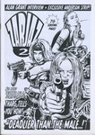 | Zarjaz 2 Andrew Lewis |
Type: Anthology Comic Year: 2002 Format: A4 Country: UK 🔗 100667 |
| Battleground 1 Andy Brewer |
Type: Zine Year: 1992 Format: A4 Country: UK 🔗 100544 |
|
 |
Battleground 2 Andy Brewer |
Type: Zine Year: 1993 Format: A4 Country: UK 🔗 100458 |
 |
Battleground 3 Andy Brewer |
Type: Zine Year: 1993 Format: A4 Country: UK 🔗 100472 |
 |
Battleground 4 Andy Brewer |
Type: Zine Year: 1994 Format: A4 Country: UK 🔗 100754 |
| Battleground 5 Andy Brewer |
Type: Zine Year: 1994 Format: A4 Country: UK 🔗 100471 |
|
| Battleground 6 Andy Brewer |
Type: Zine Year: 1994 Format: A4 Country: UK 🔗 100676 |
|
 |
Dead Hand 1 Andy Fiddy |
Type: Comic Year: 1996 Format: A4 Country: UK 🔗 100569 |
 |
Dead Hand 5 Andy Fiddy |
Type: Anthology Comic Year: Format: A4 Country: UK 🔗 100568 |
 |
Dust Andy Fiddy |
Type: Comic Year: Format: A4 Country: UK 🔗 100951 |
 |
Andy Bleck Drawings 2004 Andy Konky Kru |
Type: Art Book Year: 2004 Format: A4 Country: UK 🔗 100639 |
 |
Andy's Konky Kru Picture Strips Andy Konky Kru |
Type: Comic Year: 1995 Format: A5 Country: UK 🔗 100095 |
| Graphic Reviews 1 Andy Konky Kru |
Type: Review Zine Year: 1997 Format: A4 Country: UK 🔗 100535 |
|
| Magazine 2 Andy Konky Kru |
Type: Zine Year: 1998 Format: A5 Country: UK 🔗 100156 |
|
 |
Magazine 6 Andy Konky Kru |
Type: Zine Year: 2002 Format: A5 Country: UK 🔗 100219 |
 |
Max & Moritz Andy Konky Kru |
Type: Comic Year: Format: A5 Country: UK 🔗 100247 |
 |
Realistische Zeichnungen 1 Andy Konky Kru |
Type: Art Book Year: Format: A5 Country: UK 🔗 100033 |
 |
Shtumm 1 Andy Konky Kru |
Type: Anthology Comic Year: 2002 Format: A5 Country: UK 🔗 100339 |
 |
Shtumm 2 Andy Konky Kru |
Type: Anthology Comic Year: 2002 Format: A5 Country: UK 🔗 100390 |
| Zeichnungen Andy Konky Kru |
Type: Art Book Year: Format: A4 Country: UK 🔗 100716 |
|
 |
Zeitraum 1 Andy Konky Kru |
Type: Anthology Comic Year: 1998 Format: A4 Country: UK 🔗 100660 |
 |
Bob's 3 Andy Luke |
Type: Comic Year: 1997 Format: A5 Country: UK 🔗 100287 |
 |
Bob's 4 Andy Luke |
Type: Comic Year: 1998 Format: A5 Country: UK 🔗 100443 |
| Bob's 5 Andy Luke |
Type: Comic Year: 1998 Format: A5 Country: UK 🔗 100434 |
|
 |
Bob's - Can I have your autograph, Mr Hooker? Andy Luke |
Type: Comic Year: Format: A5 Country: UK 🔗 100365 |
 |
Bob's Annual 1 Andy Luke |
Type: Comic Year: 1997 Format: A5 Country: UK 🔗 100179 |
 |
Brookside: The Comic 86 Andy Luke |
Type: Comic Year: Format: A5 Country: UK 🔗 100370 |
 |
Good Vibrations Andy Luke |
Type: Anthology Comic Year: 1997 Format: A5 Country: UK 🔗 100357 |
| Gran (untitled?) Andy Luke |
Type: Comic Year: 2007 Format: A5 Country: UK 🔗 100865 |
|
 |
TRS2 - Comics 2001 edition Andy Luke |
Type: Review Zine Year: 2001 Format: A5 Country: UK 🔗 100032 |
 |
Angel Dust Funnies 1 Andy Nixon |
Type: Anthology Comic Year: 1989 Format: A5 Country: UK 🔗 100107 |
 |
Angel Dust Funnies 4 Andy Nixon |
Type: Anthology Comic Year: 1989 Format: A5 Country: UK 🔗 100101 |
 |
Media Assassin 9 Andy Roberts |
Type: Zine Year: 2005 Format: A5 Country: UK 🔗 100249 |
 |
Media Assassin 11 Andy Roberts |
Type: Zine Year: 2006 Format: A5 Country: UK 🔗 100250 |
 |
X-Ray 1 Andy Roberts |
Type: Zine Year: 1994 Format: A5 Country: UK 🔗 100246 |
 |
Circus of Deception Anthony Setchell |
Type: Comic Year: 2001 Format: A5 Country: UK 🔗 100279 |
 |
Suzie and Jonnie - The Morocco Run Antonio A Ghura |
Type: Comic Year: 1981 Format: A4 Country: UK 🔗 100609 |
 |
Atomic 9 Atomic |
Type: Anthology Comic Year: 1990 Format: A5 Country: UK 🔗 100018 |
 |
Atomic 10 Atomic |
Type: Anthology Comic Year: 1990 Format: A5 Country: UK 🔗 100176 |
| 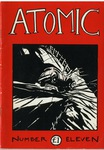 | Atomic 11 Atomic |
Type: Anthology Comic Year: 1991 Format: A5 Country: UK 🔗 100323 |
 |
The Strange and Trippy Adventures of Akira and Storm 1 Ayo + Ciara |
Type: Comic Year: 1998 Format: A4 Country: UK 🔗 100672 |
 |
The Strange and Trippy Adventures of Akira and Storm 2 Ayo + Ciara |
Type: Comic Year: Format: A4 Country: UK 🔗 100673 |
 |
Fusion 1 Barry Renshaw |
Type: Anthology Comic Year: 2002 Format: A4 Country: UK 🔗 100770 |
 |
Fusion 3 Barry Renshaw |
Type: Anthology Comic Year: Format: A4 Country: UK 🔗 100779 |
 |
How to Self Publish Barry Renshaw |
Type: Zine Year: 2002 Format: A4 Country: UK 🔗 100482 |
 |
RedEye 1 Barry Renshaw |
Type: Zine Year: 2003 Format: A4 Country: UK 🔗 100752 |
 |
RedEye 2 Barry Renshaw |
Type: Zine Year: 2004 Format: A4 Country: UK 🔗 100475 |
 |
RedEye 3 Barry Renshaw |
Type: Zine Year: 2004 Format: A4 Country: UK 🔗 100484 |
 |
Paper Theatre Ben Catmull |
Type: Comic Year: 2000 Format: A4 Country: UK 🔗 100924 |
 |
The First Job Ben Graham |
Type: Comic Year: 2001 Format: A5 Country: UK 🔗 100124 |
| Espylacopa 2 Ben Graham & Wes White |
Type: Zine Year: 1996 Format: A4 Country: UK 🔗 100778 |
|
| Espylacopa 3 Ben Graham & Wes White |
Type: Zine Year: 1996 Format: A4 Country: UK 🔗 100777 |
|
 |
Espylacopa 4 Ben Graham & Wes White |
Type: Zine Year: 1997 Format: A4 Country: UK 🔗 100785 |
 |
Punk Fiction Ben Hunt |
Type: Comic Year: 1995 Format: A4 Country: UK 🔗 100714 |
 |
Tales from the Midden 10-11 Ben Hunt |
Type: Comic Year: Format: A5 Country: UK 🔗 100331 |
 |
Vogarth Ben Hunt |
Type: Comic Year: 2001 Format: A5 Country: UK 🔗 100232 |
 |
Vogarth Ben Hunt |
Type: Comic Year: 1993 Format: A4 Country: UK 🔗 100711 |
 |
Classic Comics 2 Ben Hunt & Robyn Talbot |
Type: Comic Year: 2001 Format: A5 Country: UK 🔗 100060 |
 |
Fifteen Nuns 4 Ben Oakes |
Type: Comic Year: 1997 Format: A5 Country: UK 🔗 100188 |
 |
Fifteen Nuns 5 Ben Oakes |
Type: Comic Year: 1997 Format: A5 Country: UK 🔗 100187 |
 |
Fifteen Nuns 6 Ben Oakes |
Type: Comic Year: 1997 Format: A5 Country: UK 🔗 100189 |
 |
The Lupus 3 Ben Oakes |
Type: Comic Year: 2001 Format: A5 Country: UK 🔗 100162 |
 |
The Miserable Tale Of Demeter & Sharky Ben Oakes |
Type: Comic Year: 2002 Format: A5 Country: UK 🔗 100064 |
 |
Braque's Love Dart Bib Edwards |
Type: Comic Year: 2001 Format: A5 Country: UK 🔗 100143 |
 |
Temptress of Triton Bib Edwards |
Type: Comic Year: Format: A5 Country: UK 🔗 100448 |
 |
Big Untidy - Flyer and Letter Big Untidy |
Type: Other Year: Format: A5 Country: UK 🔗 100122 |
| Purr Quarterly 2 Blue Eye'd Dog |
Type: Zine Year: 1994 Format: A4 Country: UK 🔗 100913 |
|
 |
Mister Amperduke Bob Byrne |
Type: Comic Year: 2007 Format: A5 Country: UK 🔗 100872 |
 |
Behold the Hamster Bob Lynch |
Type: Comic Year: 1991 Format: A5 Country: UK 🔗 100366 |
 |
Double Bill Bob Lynch |
Type: Comic Year: 1992 Format: A5 Country: UK 🔗 100254 |
| Sav Sadness in Sadness in Space Bob Lynch |
Type: Comic Year: 1988 Format: A4 Country: UK 🔗 100992 |
|
| Sav Sadness in The Whirlpool of Disaster Bob Lynch |
Type: Comic Year: 1989 Format: A4 Country: UK 🔗 100968 |
|
 |
Tales of Sadness Bob Lynch |
Type: Comic Year: 1996 Format: A5 Country: UK 🔗 100117 |
 |
Anxiety Culture 1 Brian Dean |
Type: Zine Year: 1995 Format: A5 Country: UK 🔗 100049 |
 |
Anxiety Culture 3 Brian Dean |
Type: Zine Year: Format: A5 Country: UK 🔗 100072 |
 |
Frank Fazakerly Bryan Talbot |
Type: Comic Year: 1991 Format: A5 Country: UK 🔗 100192 |
| 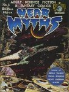 | Near Myths 5 Bryan Talbot |
Type: Anthology Comic Year: 1980 Format: A4 Country: UK 🔗 101006 |
 |
The Adventures of Luther Arkwright Bk 2 Bryan Talbot |
Type: Comic Year: 1987 Format: A4 Country: UK 🔗 100805 |
 |
The Adventures of Luther Arkwright Bk 3 Bryan Talbot |
Type: Comic Year: 1989 Format: A4 Country: UK 🔗 100804 |
 |
The Illustrated Comic Journal 32 Bryon Whitworth |
Type: Zine Year: 1997 Format: A4 Country: UK 🔗 100753 |
 |
Bugs & Drugs 1 Bugs & Drugs |
Type: Zine Year: 1992 Format: A5 Country: UK 🔗 100028 |
 |
Bugs & Drugs 4 Bugs & Drugs |
Type: Zine Year: Format: A5 Country: UK 🔗 100088 |
| ByPass 1 Bypass |
Type: Review Zine Year: 1994 Format: A4 Country: UK 🔗 100530 |
|
 |
ByPass 6 ByPass |
Type: Review Zine Year: 1996 Format: A4 Country: UK 🔗 100703 |
 |
ByPass 7 ByPass |
Type: Review Zine Year: Format: A4 Country: UK 🔗 100972 |
| Caption 1996 Caption |
Type: Other Year: 1996 Format: A4 Country: UK 🔗 100828 |
|
 |
Caption 1997 Caption |
Type: Other Year: 1997 Format: A4 Country: UK 🔗 100829 |
 |
Caption 1999 Caption |
Type: Other Year: 1999 Format: A4 Country: UK 🔗 100549 |
 |
Caption 2000 Caption |
Type: Other Year: 2000 Format: A4 Country: UK 🔗 100492 |
| Caption 2001 Caption |
Type: Other Year: 2001 Format: A4 Country: UK 🔗 100562 |
|
 |
Caption 2002 Caption |
Type: Other Year: 2002 Format: A4 Country: UK 🔗 100550 |
 |
Caption 2004 Caption |
Type: Other Year: 2004 Format: A4 Country: UK 🔗 100477 |
 |
Caption 2005 Caption |
Type: Other Year: 2005 Format: A4 Country: UK 🔗 100686 |
 |
Superstate Funnies Caption |
Type: Anthology Comic Year: 1997 Format: A4 Country: UK 🔗 100619 |
 |
Way Out Strips 4 Carol Swain |
Type: Comic Year: 1991 Format: A4 Country: UK 🔗 100925 |
 |
Nervous Tales 4 Caspar Williams |
Type: Comic Year: 1994 Format: A4 Country: UK 🔗 101027 |
 |
The Other Side 1 Chow |
Type: Comic Year: 1993 Format: A4 Country: UK 🔗 100690 |
 |
Ally and the Big Man Chris Askham |
Type: Comic Year: 2001 Format: A5 Country: UK 🔗 100300 |
 |
Dr Sponge 1 Chris Askham |
Type: Comic Year: 2001 Format: A5 Country: UK 🔗 100236 |
 |
Tales from the Mortuary Chris Askham |
Type: Comic Year: Format: A5 Country: UK 🔗 100452 |
 |
Goose Weekly 1 Chris Butler |
Type: Zine Year: 1997 Format: A5 Country: UK 🔗 100362 |
 |
Microwave Monthly Chris Butler |
Type: Comic Year: Format: A5 Country: UK 🔗 100439 |
 |
Tales of Skittle-Sharpers and Thimble-Riggers 1 Chris Butler |
Type: Comic Year: 1991 Format: A4 Country: UK 🔗 100668 |
 |
Tales of Skittle-Sharpers and Thimble-Riggers 2 Chris Butler |
Type: Comic Year: 1991 Format: A4 Country: UK 🔗 100496 |
 |
Tales of Skittle-Sharpers and Thimble-Riggers 3 Chris Butler |
Type: Comic Year: 1992 Format: A4 Country: UK 🔗 100684 |
 |
Tales of Skittle-Sharpers and Thimble-Riggers 4 Chris Butler |
Type: Comic Year: 1992 Format: A4 Country: UK 🔗 100545 |
 |
Tales of Skittle-Sharpers and Thimble-Riggers 5 Chris Butler |
Type: Comic Year: Format: A4 Country: UK 🔗 100497 |
 |
Inter-Section 1 Chris Harper |
Type: Zine Year: 1997 Format: A5 Country: UK 🔗 100394 |
| Jack Kirby Quarterly 5 Chris Harper |
Type: Zine Year: 1995 Format: A4 Country: UK 🔗 100460 |
|
 |
Jack Kirby Quarterly 6 Chris Harper |
Type: Zine Year: 1996 Format: A4 Country: UK 🔗 100461 |
 |
Jack Kirby Quarterly 7 Chris Harper |
Type: Zine Year: 1996 Format: A4 Country: UK 🔗 100462 |
 |
Jack Kirby Quarterly 8 Chris Harper |
Type: Zine Year: 1997 Format: A4 Country: UK 🔗 100459 |
 |
Jack Kirby Quarterly 9 Chris Harper |
Type: Zine Year: 1997 Format: A4 Country: UK 🔗 100463 |
 |
Adventures from Mauretania Chris Reynolds |
Type: Comic Year: 2005 Format: A4 Country: UK 🔗 101045 |
 |
A Big Slice pof Brain Cake 1 Chris Spicer |
Type: Comic Year: 1998 Format: A4 Country: UK 🔗 100708 |
 |
Malus 1 Chris Webster |
Type: Comic Year: 1995 Format: A4 Country: UK 🔗 100694 |
 |
Malus 2 Chris Webster |
Type: Comic Year: Format: A4 Country: UK 🔗 100696 |
 |
Malus 3 Chris Webster |
Type: Comic Year: Format: A4 Country: UK 🔗 100692 |
 |
Malus 4 Chris Webster |
Type: Comic Year: Format: A4 Country: UK 🔗 100693 |
 |
Rockdrill Chris Webster |
Type: Comic Year: 2005 Format: A5 Country: UK 🔗 100084 |
| Wormwood 3 Chris Webster |
Type: Comic Year: 1999 Format: A4 Country: UK 🔗 100914 |
|
 |
Joe Beach 2 Colin Brown |
Type: Comic Year: 1996 Format: A4 Country: UK 🔗 100658 |
| Comics Forum 2 Comics Creators Guild |
Type: Zine Year: 1992 Format: A4 Country: UK 🔗 101005 |
|
 |
Comics Forum 3 Comics Creators Guild |
Type: Zine Year: 1993 Format: A4 Country: UK 🔗 101026 |
| Comics Forum 4 Comics Creators Guild |
Type: Zine Year: 1993 Format: A4 Country: UK 🔗 100830 |
|
| Comics Forum 5 Comics Creators Guild |
Type: Zine Year: 1993 Format: A4 Country: UK 🔗 100831 |
|
 |
Comics Forum 6 Comics Creators Guild |
Type: Zine Year: 1994 Format: A4 Country: UK 🔗 100832 |
 |
Comics Forum 7 Comics Creators Guild |
Type: Zine Year: 1994 Format: A4 Country: UK 🔗 100833 |
 |
Comics Forum 8 Comics Creators Guild |
Type: Zine Year: 1995 Format: A4 Country: UK 🔗 100834 |
 |
Comics Forum 9 Comics Creators Guild |
Type: Zine Year: 1995 Format: A4 Country: UK 🔗 100835 |
 |
Comics Forum 10 Comics Creators Guild |
Type: Zine Year: 1996 Format: A4 Country: UK 🔗 100836 |
| 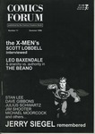 | Comics Forum 11 Comics Creators Guild |
Type: Zine Year: 1996 Format: A4 Country: UK 🔗 100837 |
 |
Comics Forum 12 Comics Creators Guild |
Type: Zine Year: 1996 Format: A4 Country: UK 🔗 100838 |
| Comics Forum 13 Comics Creators Guild |
Type: Zine Year: 1997 Format: A4 Country: UK 🔗 100839 |
|
 |
Comics Forum 14 Comics Creators Guild |
Type: Zine Year: 1997 Format: A4 Country: UK 🔗 100840 |
 |
Comics Forum 16 Comics Creators Guild |
Type: Zine Year: 1997 Format: A4 Country: UK 🔗 100841 |
 |
Toonadelic Times 2 Dal |
Type: Comic Year: 2001 Format: A5 Country: UK 🔗 100065 |
 |
Lickity Spit 2 Damian Cugley |
Type: Comic Year: 1995 Format: A5 Country: UK 🔗 100269 |
 |
Lickity Spit 3 Damian Cugley |
Type: Comic Year: 1996 Format: A5 Country: UK 🔗 100303 |
 |
Percy Street 1 Damian Cugley |
Type: Comic Year: 2004 Format: A5 Country: UK 🔗 100175 |
 |
Percy Street 2 Damian Cugley |
Type: Comic Year: 2005 Format: A5 Country: UK 🔗 100301 |
 |
Mr Nile: The Illustrated Bastard Daniel Merlin Goodbrey |
Type: Comic Year: 2003 Format: A5 Country: UK 🔗 100210 |
 |
February 4 1 Darren Powell |
Type: Comic Year: 1995 Format: A5 Country: UK 🔗 100455 |
| From Despair to Where Darren Powell |
Type: Comic Year: 1997 Format: A4 Country: UK 🔗 100771 |
|
 |
Going to Chapel Darren Powell |
Type: Comic Year: 1995 Format: A5 Country: UK 🔗 100183 |
 |
Sin 1 Darren Powell |
Type: Comic Year: 1994 Format: A5 Country: UK 🔗 100356 |
 |
Sin 2 Darren Powell |
Type: Comic Year: 1994 Format: A5 Country: UK 🔗 100361 |
 |
Sin 3 Darren Powell |
Type: Comic Year: 1995 Format: A5 Country: UK 🔗 100264 |
 |
Sin 4 Darren Powell |
Type: Comic Year: 1996 Format: A5 Country: UK 🔗 100347 |
 |
Sin 5 Darren Powell |
Type: Comic Year: 1997 Format: A5 Country: UK 🔗 100297 |
 |
Sin 6 Darren Powell |
Type: Comic Year: 1998 Format: A5 Country: UK 🔗 100393 |
 |
Sin 7 Darren Powell |
Type: Comic Year: 2004 Format: A5 Country: UK 🔗 100400 |
| Theatre of Conceits 1 Darren Powell |
Type: Comic Year: 1995 Format: A5 Country: UK 🔗 100155 |
|
 |
Theatre of Conceits 2 Darren Powell |
Type: Comic Year: 1995 Format: A5 Country: UK 🔗 100035 |
 |
Theatre of Conceits 3 Darren Powell |
Type: Comic Year: 1996 Format: A5 Country: UK 🔗 100042 |
 |
Theatre of Conceits 4 Darren Powell |
Type: Comic Year: 1996 Format: A5 Country: UK 🔗 100383 |
 |
Theatre of Conceits 5 Darren Powell |
Type: Comic Year: 1997 Format: A5 Country: UK 🔗 100291 |
 |
Theatre of Conceits 8 Darren Powell |
Type: Comic Year: 1999 Format: A5 Country: UK 🔗 100306 |
 |
Blood Relatives Darryl Cunningham |
Type: Comic Year: 1989 Format: A5 Country: UK 🔗 100121 |
 |
The British Sketchbook 1 Darryl Cunningham |
Type: Anthology Comic Year: 1997 Format: A5 Country: UK 🔗 100132 |
 |
The Marvel Sketchbook Darryl Cunningham |
Type: Anthology Comic Year: 1994 Format: A5 Country: UK 🔗 100071 |
 |
Downside 6 Dave McNamara & Peter Ketley |
Type: Comic Year: 1991 Format: A4 Country: UK 🔗 100907 |
| Modern Life Is Rubbish Dave Metcalf |
Type: Comic Year: 1997 Format: A4 Country: UK 🔗 100886 |
|
 |
My Life Story 6 Dave Metcalfe |
Type: Comic Year: Format: A4 Country: UK 🔗 100486 |
 |
David Baillie's Awkward Fascination Compendium David Baillie |
Type: Comic Year: 2003 Format: A5 Country: UK 🔗 100125 |
 |
All Women Are Bad 2 David Gordon |
Type: Comic Year: 1992 Format: A4 Country: UK 🔗 100594 |
 |
Ballet 1 David Gordon |
Type: Comic Year: 1993 Format: A4 Country: UK 🔗 100699 |
 |
Ballet 2 David Gordon |
Type: Comic Year: 1993 Format: A4 Country: UK 🔗 100495 |
 |
Black Sky 1 David Gordon |
Type: Comic Year: 1993 Format: A4 Country: UK 🔗 100623 |
 |
Damage Fever 2 David Gordon |
Type: Comic Year: 1995 Format: A4 Country: UK 🔗 100995 |
 |
Damage Fever 3 David Gordon |
Type: Comic Year: 1995 Format: A4 Country: UK 🔗 100571 |
 |
Derna the Demomic Whore David Gordon |
Type: Comic Year: 1993 Format: A4 Country: UK 🔗 100998 |
 |
Ethereal 4 David Gordon |
Type: Comic Year: 1992 Format: A4 Country: UK 🔗 100781 |
 |
Ethereal 5 David Gordon |
Type: Comic Year: 1992 Format: A4 Country: UK 🔗 100782 |
 |
Ethereal 6 David Gordon |
Type: Comic Year: 1992 Format: A4 Country: UK 🔗 100780 |
 |
Fury 2 David Gordon |
Type: Comic Year: 1991 Format: A5 Country: UK 🔗 100016 |
 |
Fury 3 David Gordon |
Type: Comic Year: 1992 Format: A5 Country: UK 🔗 100039 |
 |
Fury 4 David Gordon |
Type: Comic Year: 1992 Format: A4 Country: UK 🔗 100513 |
 |
Good Girls 2 David Gordon |
Type: Comic Year: 1993 Format: A4 Country: UK 🔗 100540 |
| Kaffe Comics Presents 1 David Gordon |
Type: Comic Year: 1993 Format: A4 Country: UK 🔗 100671 |
|
| Red Hot Red David Gordon |
Type: Comic Year: 1993 Format: A4 Country: UK 🔗 101013 |
|
 |
The Lightning Room [Damage 1] David Gordon |
Type: Comic Year: 1993 Format: A5 Country: UK 🔗 100111 |
 |
Alchemist 1 David Hobden |
Type: Anthology Comic Year: 1997 Format: A4 Country: UK 🔗 100984 |
| Alchemist 2 David Hobden |
Type: Anthology Comic Year: 1997 Format: A4 Country: UK 🔗 100982 |
|
 |
Alchemist 2 David Hobden |
Type: Anthology Comic Year: 1997 Format: A4 Country: UK 🔗 100985 |
 |
Alchemist 4 David Hobden |
Type: Anthology Comic Year: 1998 Format: A4 Country: UK 🔗 100988 |
| 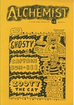 | Alchemist 6 David Hobden |
Type: Anthology Comic Year: 1998 Format: A4 Country: UK 🔗 100991 |
 |
Alchemist 7 David Hobden |
Type: Anthology Comic Year: 1998 Format: A4 Country: UK 🔗 101007 |
 |
Alchemist 8 David Hobden |
Type: Anthology Comic Year: 1998 Format: A4 Country: UK 🔗 100989 |
 |
Alchemist 9 David Hobden |
Type: Anthology Comic Year: 1999 Format: A4 Country: UK 🔗 100981 |
 |
Alchemist 10 David Hobden |
Type: Anthology Comic Year: 1999 Format: A4 Country: UK 🔗 100983 |
 |
Alchemist 11 David Hobden |
Type: Anthology Comic Year: 1999 Format: A4 Country: UK 🔗 100990 |
 |
Alchemist 12 David Hobden |
Type: Anthology Comic Year: 1998 Format: A4 Country: UK 🔗 100987 |
 |
Alchemist 13 David Hobden |
Type: Anthology Comic Year: 1999 Format: A4 Country: UK 🔗 100986 |
 |
HB 1 David Jerome |
Type: Anthology Comic Year: 1988 Format: A4 Country: UK 🔗 100590 |
 |
HB 2 David Jerome |
Type: Anthology Comic Year: 1988 Format: A4 Country: UK 🔗 100589 |
 |
Got to live their life 1 David Metcalfe |
Type: Comic Year: 1995 Format: A5 Country: UK 🔗 100182 |
 |
My Life Story 3 David Metcalfe |
Type: Comic Year: 1995 Format: A5 Country: UK 🔗 100340 |
 |
My Life Story 4 David Metcalfe |
Type: Comic Year: 1995 Format: A5 Country: UK 🔗 100379 |
 |
The Fugitive David Metcalfe |
Type: Comic Year: 1995 Format: A5 Country: UK 🔗 100318 |
 |
Burp! 2 David Morris |
Type: Comic Year: Format: Country: UK 🔗 100317 |
 |
Inkling 3 David Potts |
Type: Anthology Comic Year: 1989 Format: A4 Country: UK 🔗 100942 |
 |
Inkling 4 David Potts |
Type: Anthology Comic Year: 1989 Format: A5 Country: UK 🔗 100868 |
| 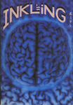 | Inkling 9 David Potts |
Type: Anthology Comic Year: 1992 Format: A5 Country: UK 🔗 100177 |
 |
Inkling 12 David Potts |
Type: Anthology Comic Year: 1994 Format: A4 Country: UK 🔗 100941 |
 |
Inkling Fish David Potts |
Type: Anthology Comic Year: 1991 Format: A5 Country: UK 🔗 100152 |
 |
The Outer Realms 3 David Willacy |
Type: Comic Year: 2004 Format: A5 Country: UK 🔗 100087 |
| 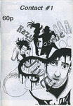 | Contact 1 Debbie Moon |
Type: Comic Year: 1997 Format: A5 Country: UK 🔗 100168 |
 |
Contact 2 Debbie Moon |
Type: Comic Year: 1997 Format: A5 Country: UK 🔗 100167 |
 |
Wasted Epiphanies Deirde Ruane |
Type: Comic Year: 2007 Format: A5 Country: UK 🔗 100198 |
 |
Kirbyville 1 Dek Baker |
Type: Comic Year: Format: A4 Country: UK 🔗 100700 |
 |
Masters of the Sonic Temple 1 Dek Baker |
Type: Comic Year: Format: A4 Country: UK 🔗 100687 |
 |
Wargods of Atlantis 1 Dek Baker |
Type: Comic Year: 1996 Format: A4 Country: UK 🔗 100541 |
 |
Wargods of Atlantis 2 Dek Baker |
Type: Comic Year: Format: A4 Country: UK 🔗 100543 |
 |
Wargods of Atlantis 6 Dek Baker |
Type: Comic Year: 1997 Format: A5 Country: UK 🔗 100243 |
 |
The Staring Eye 1 Denny Derbyshire |
Type: Comic Year: 1994 Format: A5 Country: UK 🔗 100337 |
 |
The Staring Eye 2 Denny Derbyshire |
Type: Comic Year: 1994 Format: A5 Country: UK 🔗 100373 |
 |
The Staring Eye 3 Denny Derbyshire |
Type: Comic Year: 1995 Format: A5 Country: UK 🔗 100338 |
 |
The Staring Eye 5 Denny Derbyshire |
Type: Comic Year: 1997 Format: A5 Country: UK 🔗 100374 |
 |
Fish Wish Derek Gray |
Type: Comic Year: 1993 Format: A6 Country: UK 🔗 100012 |
 |
Ground Zero 1 Derek Mantle |
Type: Anthology Comic Year: 1989 Format: A4 Country: UK 🔗 100556 |
 |
Ground Zero 2 Derek Mantle |
Type: Anthology Comic Year: 1990 Format: A4 Country: UK 🔗 100911 |
 |
Hong Kong Pussy Dirtbag Comix |
Type: Comic Year: 2003 Format: A5 Country: UK 🔗 100449 |
 |
Buddies 1 Don Melia |
Type: Anthology Comic Year: 1992 Format: A4 Country: UK 🔗 100793 |
 |
SFM Roma Douglas Nobel |
Type: Comic Year: 2002 Format: A4 Country: UK 🔗 100037 |
 |
Strip For Me 9 Douglas Nobel |
Type: Comic Year: 2002 Format: A5 Country: UK 🔗 100397 |
 |
Strip For Me 11 Douglas Nobel |
Type: Comic Year: 2002 Format: A5 Country: UK 🔗 100140 |
 |
Strip For Me 13 Douglas Nobel |
Type: Comic Year: 2003 Format: A5 Country: UK 🔗 100367 |
| 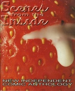 | Scenes from the Inside 2 Drat 'n' Blast Books |
Type: Anthology Comic Year: 1993 Format: A4 Country: UK 🔗 100930 |
 |
Scenes from the Inside 3 Drat 'n' Blast Books |
Type: Anthology Comic Year: 1994 Format: A4 Country: UK 🔗 101028 |
 |
Scenes from the Inside 4 Drat 'n' Blast Books |
Type: Anthology Comic Year: 1994 Format: A4 Country: UK 🔗 100964 |
 |
Scenes from the Inside 5 Drat 'n' Blast Books |
Type: Anthology Comic Year: 1995 Format: A4 Country: UK 🔗 100931 |
| Scenes from the Inside 6 Drat 'n' Blast Books |
Type: Anthology Comic Year: 1995 Format: A4 Country: UK 🔗 100965 |
|
 |
Scenes from the Inside 7 Drat 'n' Blast Books |
Type: Anthology Comic Year: 1996 Format: A4 Country: UK 🔗 100750 |
| End of the Century Ed Hillyer |
Type: Comic Year: 1994 Format: A4 Country: UK 🔗 100980 |
|
 |
The End 4 Ed Hillyer |
Type: Comic Year: 1999 Format: A5 Country: UK 🔗 100286 |
 |
Fast Fiction 12 Ed Pinsent |
Type: Anthology Comic Year: 1984 Format: A5 Country: UK 🔗 100314 |
 |
Fast Fiction 27 Ed Pinsent |
Type: Anthology Comic Year: 1989 Format: A5 Country: UK 🔗 100289 |
 |
Fast Fiction 28 Ed Pinsent |
Type: Anthology Comic Year: Format: A4 Country: UK 🔗 100787 |
 |
Henrietta!! Ed Pinsent |
Type: Comic Year: 1991 Format: A5 Country: UK 🔗 100307 |
 |
It's Not Satin Ed Pinsent |
Type: Comic Year: 1990 Format: A5 Country: UK 🔗 100444 |
 |
Silver Age Superman Ed Pinsent |
Type: Comic Year: 1993 Format: A4 Country: UK 🔗 100891 |
 |
The Sound Projector 1 Ed Pinsent |
Type: Zine Year: 1996 Format: A4 Country: UK 🔗 100762 |
 |
Vladimir the Medico Ed Pinsent |
Type: Comic Year: 1995 Format: A4 Country: UK 🔗 100618 |
 |
Voice of the WIlberforce Ed Pinsent |
Type: Comic Year: 2003 Format: A4 Country: UK 🔗 100702 |
 |
Alec - Doggie in the Window Eddie Campbell |
Type: Comic Year: 1986 Format: A4 Country: UK 🔗 100747 |
 |
Evenings of Ordinary Sand 1 Edith Whips |
Type: Comic Year: Format: A4 Country: UK 🔗 101004 |
 |
Gloomy Delight EL Press |
Type: Zine Year: 2001 Format: A5 Country: UK 🔗 100120 |
| Girlfrenzy Millennial Erica Smith |
Type: Zine Year: 1998 Format: A4 Country: UK 🔗 100794 |
|
| The Comics Irregular 1 Fabio P Barbieri |
Type: Zine Year: 1994 Format: A4 Country: UK 🔗 100756 |
|
 |
The Comics Irregular 2 Fabio P Barbieri |
Type: Zine Year: 1994 Format: A4 Country: UK 🔗 100755 |
 |
The Seven Faced Badger of Doom Factor Fiction Press |
Type: Anthology Comic Year: Format: A5 Country: UK 🔗 100086 |
 |
The Panelhouse 1 Fiona Jerome |
Type: Zine Year: 1995 Format: A4 Country: UK 🔗 100465 |
 |
The Panelhouse 2 Fiona Jerome |
Type: Zine Year: 1995 Format: A4 Country: UK 🔗 100464 |
| The Panelhouse 3 Fiona Jerome |
Type: Zine Year: 1996 Format: A4 Country: UK 🔗 100478 |
|
 |
The Panelhouse 5 Fiona Jerome |
Type: Zine Year: 1996 Format: A4 Country: UK 🔗 100519 |
 |
The Man Who Learned To Fly 2 Frazer Irving |
Type: Comic Year: 1996 Format: Comic Country: UK 🔗 100499 |
 |
The Man Who Learned To Fly Frazer Irving |
Type: Comic Year: 1998 Format: A5 Country: UK 🔗 100874 |
 |
Cosmorama 1 Garen Ewing |
Type: Anthology Comic Year: 1988 Format: A4 Country: UK 🔗 100534 |
 |
Cosmorama 2 Garen Ewing |
Type: Anthology Comic Year: Format: A4 Country: UK 🔗 100680 |
 |
Cosmorama 3 Garen Ewing |
Type: Anthology Comic Year: 1991 Format: A4 Country: UK 🔗 100533 |
 |
Delirium 1 Garen Ewing |
Type: Comic Year: 1996 Format: A5 Country: UK 🔗 100161 |
 |
The Captain Powerchord Special Garen Ewing |
Type: Comic Year: 1996 Format: A5 Country: UK 🔗 100293 |
| The Rainbow Orchisd 1 Garen Ewing |
Type: Comic Year: 2003 Format: A4 Country: UK 🔗 101011 |
|
 |
The Tempest Garen Ewing |
Type: Comic Year: 1994 Format: A4 Country: UK 🔗 100682 |
 |
Hero and the Peace-keepers 2 Garry Parkin |
Type: Comic Year: 1997 Format: A4 Country: UK 🔗 100683 |
 |
Great! 1 Gary Northfield |
Type: Comic Year: 1999 Format: Country: UK 🔗 100315 |
 |
Stupidmonsters 2 Gary Northfield |
Type: Comic Year: 2002 Format: A6 Country: UK 🔗 100011 |
 |
Fuzzball 4 Gary Parkin |
Type: Comic Year: 1997 Format: A5 Country: UK 🔗 100082 |
 |
Fuzzball 5 Gary Parkin |
Type: Comic Year: 1997 Format: A5 Country: UK 🔗 100130 |
 |
Fuzzball Summer Special Gary Parkin |
Type: Comic Year: 1997 Format: A5 Country: UK 🔗 100202 |
 |
Fuzzball Superhero Special Gary Parkin |
Type: Comic Year: 1998 Format: A5 Country: UK 🔗 100201 |
 |
Head Hunter 2 Gary Parkin |
Type: Comic Year: 1997 Format: A5 Country: UK 🔗 100238 |
 |
Head Hunter 3 Gary Parkin |
Type: Comic Year: 1997 Format: A5 Country: UK 🔗 100239 |
 |
Head Hunter 4 Gary Parkin |
Type: Comic Year: 1997 Format: A5 Country: UK 🔗 100240 |
 |
Head Hunter 5 Gary Parkin |
Type: Comic Year: 1997 Format: A5 Country: UK 🔗 100241 |
 |
Head Hunter: The Aftermath Gary Parkin |
Type: Comic Year: 1997 Format: A5 Country: UK 🔗 100237 |
 |
Hero and the Peace-keepers 1 Gary Parkin |
Type: Comic Year: 1997 Format: A5 Country: UK 🔗 100308 |
 |
Psycho 1 Gary Parkin |
Type: Zine Year: Format: A5 Country: UK 🔗 100292 |
 |
A Brief History of Small Press Comics Gav Burrows |
Type: Zine Year: 2004 Format: A5 Country: UK 🔗 100371 |
| Lucid Frenzy 1 Gav Burrows |
Type: Zine Year: 2002 Format: A5 Country: UK 🔗 100450 |
|
 |
Lucid Frenzy 2 Gav Burrows |
Type: Zine Year: 2003 Format: A5 Country: UK 🔗 100451 |
 |
Lucid Frenzy 7 Gav Burrows |
Type: Comic Year: 2006 Format: A5 Country: UK 🔗 100251 |
 |
Rocket Science Gav Burrows |
Type: Comic Year: 2003 Format: A5 Country: UK 🔗 100200 |
 |
Fin De Siecle 1 Gavin Palmer |
Type: Art Book Year: 1996 Format: A4 Country: UK 🔗 100776 |
 |
Fin De Siecle 2 Gavin Palmer |
Type: Art Book Year: 1996 Format: A4 Country: UK 🔗 100774 |
 |
Fin De Siecle 3 Gavin Palmer |
Type: Art Book Year: 1997 Format: A4 Country: UK 🔗 100773 |
| Fin De Siecle 6 Gavin Palmer |
Type: Art Book Year: 1997 Format: A4 Country: UK 🔗 100775 |
|
| 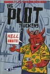 | The Plot Thickens 1 Gaving Burrows |
Type: Anthology Comic Year: 1999 Format: A5 Country: UK 🔗 100858 |
 |
Boo Koo Comic 1 Geoffrey A Coupland |
Type: Comic Year: 1995 Format: A4 Country: UK 🔗 100979 |
 |
Memories of a Murderer Giulia Brusco |
Type: Comic Year: 2000 Format: A5 Country: UK 🔗 100266 |
| Abe in Greece, Ireland and a Dream England Glenn Dakin |
Type: Comic Year: 1994 Format: A4 Country: UK 🔗 100994 |
|
 |
Aggadon Goodman Bros |
Type: Comic Year: 2004 Format: A5 Country: UK 🔗 100061 |
 |
Bahala Na! 3 Goodman Bros |
Type: Comic Year: 2003 Format: A5 Country: UK 🔗 100229 |
 |
Comic Express 5 Goodman Bros |
Type: Anthology Comic Year: 2000 Format: A4 Country: UK 🔗 100552 |
| Magical Science Robot Zappy Goodman Bros |
Type: Comic Year: 2003 Format: A7 Country: UK 🔗 100859 |
|
 |
Pulp Kitchen 3 Goodman Bros |
Type: Anthology Comic Year: Format: A4 Country: UK 🔗 101009 |
 |
Pulp Kitchen 4 Goodman Bros |
Type: Anthology Comic Year: 2000 Format: A4 Country: UK 🔗 100715 |
 |
Pulp Kitchen 5 Goodman Bros |
Type: Anthology Comic Year: 2001 Format: A4 Country: UK 🔗 100661 |
 |
Zip Gun Presents - Chimera Goodman Bros |
Type: Anthology Comic Year: 2003 Format: A5 Country: UK 🔗 100069 |
 |
Zip Gun Presents - Japan Goodman Bros |
Type: Anthology Comic Year: 2001 Format: A5 Country: UK 🔗 100129 |
| Zip Gun Presents - Noir Goodman Bros |
Type: Anthology Comic Year: 2002 Format: A5 Country: UK 🔗 100316 |
|
 |
Sgt Mike Battle Graham Pearce |
Type: Comic Year: 2001 Format: A5 Country: UK 🔗 100147 |
 |
Watchblood Graham Pearce |
Type: Comic Year: Format: A5 Country: UK 🔗 100112 |
| Pest Control 2 Grant Springford |
Type: Comic Year: 2002 Format: Comic Country: UK 🔗 100961 |
|
 |
GuilFin 106 GuilFin |
Type: Zine Year: 1998 Format: A4 Country: UK 🔗 100939 |
 |
The Journal of Silly 10 Ham & Knife |
Type: Anthology Comic Year: 1997 Format: A5 Country: UK 🔗 100270 |
 |
The Journal of Silly 12b Ham & Knife |
Type: Anthology Comic Year: Format: A5 Country: UK 🔗 100427 |
 |
Honeypears 3 Heather Middleton |
Type: Comic Year: 2004 Format: A4 Country: UK 🔗 100489 |
| Jamanga Hiroko Jones |
Type: Comic Year: 1997 Format: A4 Country: UK 🔗 100653 |
|
 |
Cheeky Monkey's Fun Book Hisae Arai |
Type: Comic Year: Format: A5 Country: UK 🔗 100059 |
 |
After a Night of Improbable and Grotesque Mischief Ian Thomas |
Type: Comic Year: 2003 Format: A5 Country: UK 🔗 100454 |
 |
Fight Amnesia! 10 Into The Abyss |
Type: Zine Year: 1996 Format: A5 Country: UK 🔗 100118 |
 |
Stripburger 9 Jakob Kelmenčič |
Type: Anthology Comic Year: 1992 Format: A4 Country: UK 🔗 100604 |
| 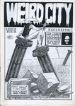 | Weird City 4 James Boswell |
Type: Anthology Comic Year: 1993 Format: A4 Country: UK 🔗 100546 |
 |
Weird City 5 James Boswell |
Type: Anthology Comic Year: 1993 Format: A4 Country: UK 🔗 100547 |
 |
Weird City 6 James Boswell |
Type: Anthology Comic Year: 1994 Format: A4 Country: UK 🔗 100536 |
 |
Super Cookie Mix 1 James Harvey |
Type: Comic Year: 2002 Format: A4 Country: UK 🔗 100704 |
 |
Dr Parsons Strips and Boxes James Parsons |
Type: Comic Year: 2002 Format: A5 Country: UK 🔗 100213 |
 |
This is me by georg bush James Parsons |
Type: Comic Year: 2001 Format: A5 Country: UK 🔗 100285 |
 |
This is us by Mrs Becem James Parsons |
Type: Comic Year: 2002 Format: A5 Country: UK 🔗 100256 |
| Buldog Empire - preview Jason Cobley |
Type: Comic Year: Format: A5 Country: UK 🔗 100319 |
|
 |
Bulldog 1 Jason Cobley |
Type: Comic Year: 1993 Format: A4 Country: UK 🔗 100718 |
 |
Bulldog 2 Jason Cobley |
Type: Comic Year: 1994 Format: A4 Country: UK 🔗 100626 |
 |
Bulldog 3 Jason Cobley |
Type: Comic Year: 1994 Format: A4 Country: UK 🔗 100621 |
 |
Bulldog 4 Jason Cobley |
Type: Comic Year: 1994 Format: A4 Country: UK 🔗 100627 |
 |
Bulldog 5 Jason Cobley |
Type: Comic Year: 1995 Format: A4 Country: UK 🔗 100628 |
 |
Bulldog 6 Jason Cobley |
Type: Comic Year: 1995 Format: A4 Country: UK 🔗 100630 |
 |
Bulldog 7 Jason Cobley |
Type: Comic Year: 1995 Format: A4 Country: UK 🔗 100629 |
| Bulldog 15 Jason Cobley |
Type: Comic Year: 1997 Format: Comic Country: UK 🔗 100479 |
|
 |
Bulldog 19 Jason Cobley |
Type: Comic Year: 2001 Format: A4 Country: UK 🔗 100665 |
 |
Bulldog 20 Jason Cobley |
Type: Comic Year: 2001 Format: A4 Country: UK 🔗 100664 |
 |
Bulldog 21 Jason Cobley |
Type: Comic Year: 2002 Format: A4 Country: UK 🔗 100678 |
| Bulldog 22 Jason Cobley |
Type: Comic Year: 2002 Format: A4 Country: UK 🔗 100679 |
|
 |
Bulldog 23 Jason Cobley |
Type: Comic Year: 2003 Format: A4 Country: UK 🔗 100659 |
| Bulldog 26 Jason Cobley |
Type: Comic Year: 2003 Format: A4 Country: UK 🔗 100975 |
|
 |
Bulldog 27 Jason Cobley |
Type: Comic Year: 2005 Format: A5 Country: UK 🔗 100284 |
 |
Topaz 8 Jason Lyne |
Type: Anthology Comic Year: 1997 Format: A4 Country: UK 🔗 100936 |
 |
Topaz 17 Jason Lyne |
Type: Anthology Comic Year: 2000 Format: A4 Country: UK 🔗 100510 |
 |
Caption 6 Jenni Scott |
Type: Zine Year: 1993 Format: A4 Country: UK 🔗 100826 |
 |
Caption 8 Jenni Scott |
Type: Zine Year: 1993 Format: A4 Country: UK 🔗 100825 |
 |
Caption 9 Jenni Scott |
Type: Zine Year: 1993 Format: A4 Country: UK 🔗 100466 |
 |
Caption 10 Jenni Scott |
Type: Zine Year: 1994 Format: A4 Country: UK 🔗 100824 |
 |
Caption 11 Jenni Scott |
Type: Zine Year: 1994 Format: A4 Country: UK 🔗 100822 |
| Caption 12 Jenni Scott |
Type: Zine Year: 1994 Format: A4 Country: UK 🔗 100634 |
|
 |
Caption 13 Jenni Scott |
Type: Zine Year: 1994 Format: A4 Country: UK 🔗 100821 |
 |
Caption 14 Jenni Scott |
Type: Zine Year: 1994 Format: A4 Country: UK 🔗 100467 |
 |
Caption 15 Jenni Scott |
Type: Zine Year: 1994 Format: A4 Country: UK 🔗 100823 |
 |
Caption 16 Jenni Scott |
Type: Zine Year: 1995 Format: A4 Country: UK 🔗 100820 |
 |
Caption 17 Jenni Scott |
Type: Zine Year: 1995 Format: A4 Country: UK 🔗 100819 |
| Caption 18 Jenni Scott |
Type: Zine Year: 1995 Format: A4 Country: UK 🔗 100818 |
|
 |
Caption 19 Jenni Scott |
Type: Zine Year: 1995 Format: A4 Country: UK 🔗 100485 |
 |
Caption 20 Jenni Scott |
Type: Zine Year: 1995 Format: A4 Country: UK 🔗 100817 |
| Caption 21 Jenni Scott |
Type: Zine Year: 1995 Format: A4 Country: UK 🔗 100632 |
|
 |
Caption 22 Jenni Scott |
Type: Zine Year: 1996 Format: A4 Country: UK 🔗 100816 |
 |
Caption 23 Jenni Scott |
Type: Zine Year: 1996 Format: A4 Country: UK 🔗 100815 |
 |
Caption 24 Jenni Scott |
Type: Zine Year: 1996 Format: A4 Country: UK 🔗 100814 |
 |
Caption 25 Jenni Scott |
Type: Zine Year: 1996 Format: A4 Country: UK 🔗 100813 |
| Caption 26 Jenni Scott |
Type: Zine Year: 1996 Format: A4 Country: UK 🔗 100812 |
|
 |
Caption 27 Jenni Scott |
Type: Zine Year: 1996 Format: A4 Country: UK 🔗 100811 |
 |
Caption 28 Jenni Scott |
Type: Zine Year: 1997 Format: A4 Country: UK 🔗 100633 |
 |
Caption 29 Jenni Scott |
Type: Zine Year: 1997 Format: A4 Country: UK 🔗 100810 |
 |
Caption 30 Jenni Scott |
Type: Zine Year: 1998 Format: A4 Country: UK 🔗 100751 |
 |
Cribbage Jenny Linn-Cole |
Type: Comic Year: 1997 Format: A4 Country: UK 🔗 100553 |
 |
3inaBed 7 Jeremy Dennis |
Type: Comic Year: 1995 Format: A4 Country: UK 🔗 101023 |
 |
3inaBed 11 Jeremy Dennis |
Type: Comic Year: 1995 Format: A5 Country: UK 🔗 100002 |
 |
3inaBed 13 Jeremy Dennis |
Type: Comic Year: Format: A5 Country: UK 🔗 100296 |
 |
3inaBed 15 Jeremy Dennis |
Type: Comic Year: 1996 Format: A5 Country: UK 🔗 100007 |
| Cohabiting Cheapskates 6 Jeremy Dennis |
Type: Comic Year: 1998 Format: A5 Country: UK 🔗 100290 |
|
| Feeding the Geese Jeremy Dennis |
Type: Comic Year: Format: A5 Country: UK 🔗 100015 |
|
 |
Minute Steaks 22 Jeremy Dennis |
Type: Comic Year: Format: A5 Country: UK 🔗 100038 |
 |
The Little Blue Book Of Extraordinary Interiors Jeremy Dennis |
Type: Comic Year: 2004 Format: A5 Country: UK 🔗 100040 |
 |
The Weeky Strip Jeremy Dennis |
Type: Comic Year: 2001 Format: A5 Country: UK 🔗 100146 |
 |
Whatever Happed to Jeremy Dennis Jeremy Dennis |
Type: Comic Year: 2001 Format: A5 Country: UK 🔗 100245 |
 |
Kamandi Jeremy Lewis |
Type: Comic Year: 1997 Format: A5 Country: UK 🔗 100350 |
| Myron Price of Wessex 1 Jeremy Lewis |
Type: Comic Year: 1996 Format: A4 Country: UK 🔗 100766 |
|
 |
Odetta 3 Jeremy Lewis |
Type: Comic Year: 1997 Format: A5 Country: UK 🔗 100384 |
| The Adventures of Kid Kadet 1 Jeremy Lewis |
Type: Comic Year: 1995 Format: A4 Country: UK 🔗 100953 |
|
| The Adventures of Kid Kadet 2 Jeremy Lewis |
Type: Comic Year: 1995 Format: A4 Country: UK 🔗 100950 |
|
 |
Delicious 11 Jessica |
Type: Comic Year: Format: A5 Country: UK 🔗 100381 |
 |
Happy-Type Heroes 2 Jessica |
Type: Comic Year: 1997 Format: A5 Country: UK 🔗 100205 |
 |
Lore 1 Jessica |
Type: Comic Year: Format: A5 Country: UK 🔗 100304 |
 |
Psychosense 1 Jessica |
Type: Comic Year: 1996 Format: A5 Country: UK 🔗 100017 |
 |
Psychosense 4 Jessica |
Type: Comic Year: 1996 Format: A5 Country: UK 🔗 100333 |
 |
Psychosense 5 Jessica |
Type: Comic Year: 1996 Format: A5 Country: UK 🔗 100320 |
| Psychosense 9 Jessica |
Type: Comic Year: 1997 Format: A5 Country: UK 🔗 100013 |
|
 |
Psychosense 10 Jessica |
Type: Comic Year: 1998 Format: A5 Country: UK 🔗 100265 |
 |
Psychosense Tales 1 Jessica |
Type: Comic Year: 1997 Format: A5 Country: UK 🔗 100261 |
 |
Coffee Time 7 Jez Higgins |
Type: Comic Year: 1993 Format: A5 Country: UK 🔗 100108 |
 |
Coffee Time 8 Jez Higgins |
Type: Comic Year: 1994 Format: A5 Country: UK 🔗 100348 |
 |
Coffee Time 9 Jez Higgins |
Type: Comic Year: 1994 Format: A5 Country: UK 🔗 100298 |
 |
TRS3 May 2002 Jez Higgins |
Type: Review Zine Year: Format: A4 Country: UK 🔗 100036 |
 |
Awe Jim Cameron |
Type: Anthology Comic Year: 1993 Format: A4 Country: UK 🔗 101024 |
 |
Complicity Jim Cameron |
Type: Comic Year: 1997 Format: A5 Country: UK 🔗 100166 |
 |
Confused Jim Cameron |
Type: Comic Year: 1996 Format: A5 Country: UK 🔗 100128 |
| Disillusion Jim Cameron |
Type: Comic Year: 1996 Format: A5 Country: UK 🔗 100255 |
|
 |
Thou Art That Jim Cameron |
Type: Comic Year: Format: A5 Country: UK 🔗 100313 |
 |
Rider's Writes 5 Jim Jones |
Type: Zine Year: 1997 Format: A5 Country: UK 🔗 100068 |
 |
Bad Attitude Boy 1 Jim Mcgee |
Type: Comic Year: 2002 Format: A5 Country: UK 🔗 100442 |
 |
RSI Jim Mcgee |
Type: Comic Year: 2003 Format: A5 Country: UK 🔗 100346 |
 |
Square Eyed Stories 3 Jim McGee |
Type: Anthology Comic Year: 1988 Format: A4 Country: UK 🔗 100557 |
 |
Square Eyed Stories 4 Jim McGee |
Type: Anthology Comic Year: 1988 Format: A4 Country: UK 🔗 100559 |
| 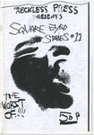 | Square Eyed Stories 11 Jim Mcgee |
Type: Anthology Comic Year: 1999 Format: A5 Country: UK 🔗 100425 |
 |
Square Eyed Stories 13 Jim Mcgee |
Type: Anthology Comic Year: 2001 Format: A5 Country: UK 🔗 100426 |
| 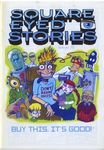 | Square Eyed Stories 15 Jim Mcgee |
Type: Anthology Comic Year: 2002 Format: A5 Country: UK 🔗 100330 |
 |
Square Eyed Stories 16 Jim Mcgee |
Type: Anthology Comic Year: 2003 Format: A5 Country: UK 🔗 100090 |
 |
Square Eyed Stories 17 Jim Mcgee |
Type: Anthology Comic Year: 2004 Format: A5 Country: UK 🔗 100093 |
 |
Octobriana 5 John A Short |
Type: Comic Year: 1997 Format: Comic Country: UK 🔗 100959 |
 |
Octobriana Preview John A Short |
Type: Comic Year: 1996 Format: Comic Country: UK 🔗 100958 |
| The Right Times 3 John Attwood |
Type: Zine Year: 1988 Format: A4 Country: UK 🔗 100916 |
|
 |
The Bruising Pit John Cake |
Type: Comic Year: 1998 Format: A5 Country: UK 🔗 100109 |
 |
Mongrel 5 John Doran |
Type: Comic Year: 2001 Format: A4 Country: UK 🔗 100538 |
 |
Stop Making Sense 2 John Edwards |
Type: Comic Year: Format: A5 Country: UK 🔗 100253 |
 |
Bedlam 1 John Gallagher |
Type: Anthology Comic Year: 1999 Format: A4 Country: UK 🔗 100935 |
 |
Fancy a Brew 1 John Jaques |
Type: Zine Year: 1997 Format: A5 Country: UK 🔗 100051 |
| Slab Comix 1 John Meirs |
Type: Comic Year: 2002 Format: A4 Country: UK 🔗 100993 |
|
 |
Metaluna 1 John Miller |
Type: Zine Year: Format: A5 Country: UK 🔗 100325 |
 |
Metaluna 2 John Miller |
Type: Zine Year: Format: A5 Country: UK 🔗 100389 |
| The Collected John G Miller 1 John Miller |
Type: Comic Year: 2011 Format: A4 Country: UK 🔗 100880 |
|
| The Collected John G Miller 2 John Miller |
Type: Comic Year: 2012 Format: A4 Country: UK 🔗 100881 |
|
| The Collected John G Miller 3 John Miller |
Type: Comic Year: 2011 Format: A4 Country: UK 🔗 100882 |
|
 |
Goathland 1 John Welding |
Type: Comic Year: 1997 Format: A5 Country: UK 🔗 100352 |
 |
Goathland 4 John Welding |
Type: Comic Year: 1997 Format: A5 Country: UK 🔗 100342 |
 |
Goathland 6 John Welding |
Type: Year: 1997 Format: A5 Country: UK 🔗 100436 |
 |
Goathland 7 John Welding |
Type: Comic Year: 1997 Format: A5 Country: UK 🔗 100341 |
| Goathland 9 John Welding |
Type: Comic Year: 1998 Format: A5 Country: UK 🔗 100351 |
|
 |
Ain't Life A Blast 2 Jone-Zee |
Type: Comic Year: Format: A5 Country: UK 🔗 100041 |
 |
Asbestos 1 Jone-Zee |
Type: Anthology Comic Year: 1995 Format: A4 Country: UK 🔗 100606 |
 |
Asbestos 2 Jone-Zee |
Type: Anthology Comic Year: 1995 Format: A4 Country: UK 🔗 100596 |
 |
Copse Kate Evans |
Type: Zine Year: 1998 Format: A4 Country: UK 🔗 100971 |
| Bellyflop 1 Kieron Mullins |
Type: Comic Year: 1997 Format: A4 Country: UK 🔗 100706 |
|
| Each Man Kills The Thing He Loves Kieron Mullins |
Type: Comic Year: 2000 Format: A5 Country: UK 🔗 100861 |
|
 |
Cheap Date 1 Kira Jolliffe |
Type: Zine Year: 1997 Format: A4 Country: UK 🔗 100956 |
| Cheap Date 2 Kira Jolliffe |
Type: Zine Year: 1997 Format: A4 Country: UK 🔗 100917 |
|
 |
AshCom 1 Laura Watton |
Type: Comic Year: 2002 Format: A5 Country: UK 🔗 100395 |
 |
Mondo Comix 2 Lee Davis |
Type: Comic Year: 1991 Format: A4 Country: UK 🔗 100487 |
| Inner City Pagan 5 Lee Kennedy |
Type: Comic Year: 2000 Format: A4 Country: UK 🔗 100943 |
|
 |
Inner City Pagan 6 Lee Kennedy |
Type: Comic Year: 2005 Format: A4 Country: UK 🔗 100531 |
 |
Indie Forum 5 Leonie O'Moore |
Type: Anthology Comic Year: 1997 Format: A4 Country: UK 🔗 100944 |
 |
Love the Monsters Leonie O'Moore |
Type: Comic Year: 2001 Format: A4 Country: UK 🔗 100554 |
| Mistakes and Regrets Leonie O'Moore |
Type: Comic Year: 2004 Format: A5 Country: UK 🔗 100369 |
|
 |
Monstrum Horrendum 2 Leonie O'Moore |
Type: Comic Year: Format: A5 Country: UK 🔗 100368 |
| Some Forgotten Part Leonie O'Moore |
Type: Comic Year: 2006 Format: A4 Country: UK 🔗 101044 |
|
 |
Combat Colin Lew Stringer |
Type: Comic Year: 2000 Format: A4 Country: UK 🔗 100719 |
 |
Yampy Tales 1 Lew Stringer |
Type: Comic Year: 1995 Format: A4 Country: UK 🔗 100666 |
 |
Yampy Tales 2 Lew Stringer |
Type: Comic Year: 1996 Format: A4 Country: UK 🔗 100895 |
 |
Euro Liliane 11 Liliane |
Type: Comic Year: 1996 Format: A5 Country: UK 🔗 100004 |
 |
Low Cal Comix 4 Low Cal Comix |
Type: Comic Year: Format: A4 Country: UK 🔗 100555 |
 |
Mitten Brain 2 Luella Jane Wright |
Type: Comic Year: 1994 Format: A5 Country: UK 🔗 100097 |
| Box of Eyes 1 Luke Walsh |
Type: Comic Year: 1993 Format: Comic Country: UK 🔗 100734 |
|
 |
Box of Eyes 2 Luke Walsh |
Type: Comic Year: 1993 Format: Comic Country: UK 🔗 100733 |
 |
Box of Eyes 3 Luke Walsh |
Type: Comic Year: 1993 Format: Comic Country: UK 🔗 100735 |
| Duende 0 Luke Walsh |
Type: Comic Year: 1990 Format: A4 Country: UK 🔗 100657 |
|
 |
Tales from the Heart of Appletown Luke Walsh |
Type: Comic Year: 1987 Format: A4 Country: UK 🔗 100595 |
 |
Weird Astral Detective Fiction Luke Walsh |
Type: Comic Year: 1992 Format: A5 Country: UK 🔗 100075 |
 |
Zum! 6 Luke Walsh & Mike Kidson |
Type: Review Zine Year: 1993 Format: A4 Country: UK 🔗 100529 |
 |
Bedlam Black 1 Mal Earl |
Type: Comic Year: 1996 Format: A4 Country: UK 🔗 100705 |
 |
Fiddleback Portfolio Mal Earl |
Type: Other Year: 1998 Format: A4 Country: UK 🔗 100560 |
 |
A Lone Still Malcy Duff |
Type: Comic Year: 2005 Format: A5 Country: UK 🔗 100244 |
 |
Cute Yuck 1 Malcy Duff |
Type: Comic Year: 2000 Format: A5 Country: UK 🔗 100169 |
 |
Gunk Malcy Duff |
Type: Comic Year: 2000 Format: A5 Country: UK 🔗 100355 |
 |
Hoofprints Malcy Duff |
Type: Comic Year: 2001 Format: A5 Country: UK 🔗 100235 |
 |
I Can't Draw 2 Malcy Duff |
Type: Comic Year: 2005 Format: A5 Country: UK 🔗 100252 |
 |
Kerry Malcy Duff |
Type: Comic Year: 2002 Format: A5 Country: UK 🔗 100260 |
 |
The Cloud Dog Agency Malcy Duff |
Type: Comic Year: 1999 Format: A5 Country: UK 🔗 100127 |
 |
The RRobots Joke Book Malcy Duff |
Type: Comic Year: 2004 Format: A4 Country: UK 🔗 100656 |
 |
Zero Termite 3 Malcy Duff |
Type: Comic Year: 1998 Format: A5 Country: UK 🔗 100438 |
 |
Zero Termite 4 Malcy Duff |
Type: Comic Year: 1998 Format: A5 Country: UK 🔗 100030 |
 |
Zero Termite 7 Malcy Duff |
Type: Comic Year: 1999 Format: A5 Country: UK 🔗 100081 |
| The Implausibility of Reason Marcel Angel |
Type: Comic Year: Format: A5 Country: UK 🔗 100866 |
|
| 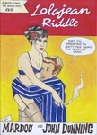 | Lolajean Riddle Mardou |
Type: Comic Year: 2005 Format: A4 Country: UK 🔗 100898 |
| Stiro 1 Mardou |
Type: Comic Year: 2001 Format: A4 Country: UK 🔗 101010 |
|
 |
Stiro 2 Mardou |
Type: Comic Year: 2002 Format: A5 Country: UK 🔗 100422 |
| Stiro 3 Mardou |
Type: Comic Year: 2003 Format: A4 Country: UK 🔗 101012 |
|
 |
Sputnik 1 Mark Bickley |
Type: Comic Year: 1999 Format: A5 Country: UK 🔗 100322 |
 |
Disinfotainment Mark Pawson |
Type: Catalogue Year: 1996 Format: Other Country: UK 🔗 100851 |
 |
Disinfotainment - Armchair Shopping Mark Pawson |
Type: Catalogue Year: 1996 Format: Other Country: UK 🔗 100008 |
 |
Mapk Пaвcoн Mark Pawson |
Type: Art Book Year: Format: A5 Country: UK 🔗 100076 |
 |
Botulism Banquet Mark Stafford |
Type: Comic Year: 2005 Format: A4 Country: UK 🔗 100788 |
 |
Scenes From Books I Have Not Read Mark Stafford |
Type: Comic Year: Format: Other Country: UK 🔗 100791 |
 |
Flimsy Monsterworks 2 Martin Hand |
Type: Comic Year: 1997 Format: A5 Country: UK 🔗 100206 |
 |
BEM 22 Martin Lock |
Type: Zine Year: 1979 Format: A4 Country: UK 🔗 100759 |
 |
Lariat 2 Martin Stephenson |
Type: Comic Year: 1997 Format: A4 Country: UK 🔗 100597 |
| 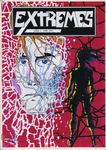 | Extremes 1 Martyn Jones |
Type: Anthology Comic Year: 1993 Format: A4 Country: UK 🔗 100767 |
| 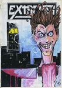 | Extremes 2 Martyn Jones |
Type: Anthology Comic Year: 1993 Format: A4 Country: UK 🔗 100768 |
 |
Hawaii Matt Broersma |
Type: Comic Year: 2004 Format: A5 Country: UK 🔗 100388 |
 |
Les 9 cries du chat blanc Matt Broersma |
Type: Comic Year: 2004 Format: A5 Country: UK 🔗 100234 |
 |
Grim Smith 2 Matt Dyer |
Type: Comic Year: 1997 Format: A4 Country: UK 🔗 100539 |
 |
The Ant's Own Tram Wheel 1 Matthew Lawrenson |
Type: Zine Year: 1993 Format: A5 Country: UK 🔗 100399 |
| The Ant's Own Tram Wheel 3 Matthew Lawrenson |
Type: Zine Year: 1994 Format: A5 Country: UK 🔗 100158 |
|
 |
The Ant's Own Tram Wheel 4 Matthew Lawrenson |
Type: Zine Year: 1994 Format: A5 Country: UK 🔗 100215 |
 |
Thoughts and Words 2 Matthew Lawrenson |
Type: Zine Year: 2002 Format: A5 Country: UK 🔗 100110 |
 |
Little Avatar Simon Maurice van der Heiden |
Type: Comic Year: 1998 Format: A4 Country: UK 🔗 100763 |
| Strange Weather Lately 1 Metaphrog |
Type: Comic Year: 1996 Format: A4 Country: UK 🔗 100721 |
|
 |
Agol 0 Michael Kennally |
Type: Zine Year: 1998 Format: A4 Country: UK 🔗 100757 |
 |
Destronic News 1 Michael Perridge |
Type: Zine Year: 1991 Format: A5 Country: UK 🔗 100302 |
 |
Destronic News 2 Michael Perridge |
Type: Anthology Comic Year: 1992 Format: A5 Country: UK 🔗 100212 |
 |
Violent 4 Mike Sivier |
Type: Anthology Comic Year: 2001 Format: A4 Country: UK 🔗 100920 |
 |
Violent 5 Mike Sivier |
Type: Anthology Comic Year: 2002 Format: A4 Country: UK 🔗 100712 |
| Passing Futures Mike Weller |
Type: Comic Year: 1999 Format: A4 Country: UK 🔗 100717 |
|
 |
Space Opera 1 Mike Weller |
Type: Comic Year: 1997 Format: A4 Country: UK 🔗 100640 |
| Space Opera 2 Mike Weller |
Type: Comic Year: 1997 Format: A4 Country: UK 🔗 100641 |
|
 |
Space Opera 3 Mike Weller |
Type: Comic Year: 1997 Format: A4 Country: UK 🔗 100642 |
 |
Space Opera 4 Mike Weller |
Type: Comic Year: 1997 Format: A4 Country: UK 🔗 100643 |
| Space Opera 5 Mike Weller |
Type: Comic Year: 1998 Format: A4 Country: UK 🔗 100644 |
|
 |
Space Opera 6 Mike Weller |
Type: Comic Year: 1998 Format: A4 Country: UK 🔗 100645 |
 |
Space Opera 7 Mike Weller |
Type: Comic Year: 1998 Format: A4 Country: UK 🔗 100646 |
 |
Space Opera 8 Mike Weller |
Type: Comic Year: 1998 Format: A4 Country: UK 🔗 100647 |
 |
Space Opera 9 Mike Weller |
Type: Comic Year: 1999 Format: A4 Country: UK 🔗 100648 |
 |
Space Opera 10 Mike Weller |
Type: Comic Year: 1999 Format: A4 Country: UK 🔗 100649 |
 |
Space Opera 11 Mike Weller |
Type: Comic Year: 1999 Format: A4 Country: UK 🔗 100650 |
| Space Opera 12 Mike Weller |
Type: Comic Year: 1999 Format: A4 Country: UK 🔗 100651 |
|
 |
Space Opera: The Artist's Book Mike Weller |
Type: Comic Year: 2000 Format: A4 Country: UK 🔗 100938 |
 |
The Ballad of Harriet Staunton 1 Mike Weller |
Type: Comic Year: 1998 Format: A4 Country: UK 🔗 100652 |
 |
The Boys Are Back In Town Mike Weller |
Type: Comic Year: 1998 Format: Comic Country: UK 🔗 100739 |
 |
The Story of Republic Nine Mike Weller |
Type: Comic Year: 1994 Format: A4 Country: UK 🔗 100625 |
 |
The Sugar Paper Rebellion Mike Weller |
Type: Comic Year: 1998 Format: A5 Country: UK 🔗 100220 |
 |
Amateur demo edition Mitch & Murray |
Type: Comic Year: 1997 Format: A5 Country: UK 🔗 100098 |
 |
Bunker 2 Mr C |
Type: Zine Year: 1994 Format: A5 Country: UK 🔗 100867 |
 |
Grinning Like Fathers Puppet n/a |
Type: Comic Year: 2002 Format: A5 Country: UK 🔗 100440 |
 |
Cleansing Services: Special Ops 1 Neill Cameron |
Type: Comic Year: 1994 Format: A4 Country: UK 🔗 100532 |
| Sunspots Nick Abadzis |
Type: Comic Year: 2001 Format: A5 Country: UK 🔗 100435 |
|
 |
The Argotist 2 Nick Watson |
Type: Zine Year: 1997 Format: A4 Country: UK 🔗 100576 |
 |
Gone Nigel Autcherlounie |
Type: Comic Year: 2003 Format: A5 Country: UK 🔗 100870 |
 |
Silver 1 Nigel Lowrey |
Type: Comic Year: 1999 Format: A4 Country: UK 🔗 101018 |
| The Adventures of Hamish and Dwarf Nigel Roberts |
Type: Comic Year: 1996 Format: A5 Country: UK 🔗 100310 |
|
| Astonishing Beer Stories 1 Nigel Sambells |
Type: Comic Year: Format: A4 Country: UK 🔗 100591 |
|
 |
Astonishing Beer Stories 4 Nigel Sambells |
Type: Comic Year: 1995 Format: A4 Country: UK 🔗 100691 |
 |
Astonishing Beer Stories 5 Nigel Sambells |
Type: Comic Year: 1996 Format: A4 Country: UK 🔗 100622 |
| Astonishing Beer Stories 6 Nigel Sambells |
Type: Comic Year: 1997 Format: A4 Country: UK 🔗 100654 |
|
 |
Astonishing Beer Stories 7 Nigel Sambells |
Type: Comic Year: 1997 Format: A4 Country: UK 🔗 100631 |
 |
Astonishing Beer Stories 8 Nigel Sambells |
Type: Comic Year: 1998 Format: A4 Country: UK 🔗 100592 |
| 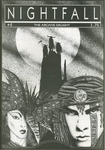 | Nighfall 4 Noel K Hannan |
Type: Anthology Comic Year: 1991 Format: A4 Country: UK 🔗 100889 |
 |
Nightfall 2 Noel K Hannan |
Type: Anthology Comic Year: 1990 Format: A5 Country: UK 🔗 100430 |
 |
Nightfall 3 Noel K Hannan |
Type: Anthology Comic Year: 1991 Format: A4 Country: UK 🔗 100695 |
 |
Nightfall 5 Noel K Hannan |
Type: Anthology Comic Year: 1992 Format: A4 Country: UK 🔗 100593 |
| Solo Noel K Hannan |
Type: Comic Year: Format: A4 Country: UK 🔗 100940 |
|
 |
Streetmeat 1 Noel K Hannan |
Type: Comic Year: 1995 Format: A4 Country: UK 🔗 100688 |
 |
Streetmeat 2 Noel K Hannan |
Type: Comic Year: 1995 Format: A4 Country: UK 🔗 100720 |
 |
A Virtual Circle 1 Patrick Brown |
Type: Comic Year: 1995 Format: A5 Country: UK 🔗 100335 |
 |
A Virtual Circle 2 Patrick Brown |
Type: Comic Year: 1996 Format: A5 Country: UK 🔗 100344 |
 |
A Virtual Circle 4 Patrick Brown |
Type: Comic Year: 1996 Format: A5 Country: UK 🔗 100332 |
 |
A Virtual Circle 5 Patrick Brown |
Type: Comic Year: 1996 Format: A5 Country: UK 🔗 100345 |
 |
Tamara Knight Patrick Brown |
Type: Comic Year: 1996 Format: A5 Country: UK 🔗 100353 |
 |
Under the Bed Patrick Brown |
Type: Comic Year: 1996 Format: A5 Country: UK 🔗 100334 |
 |
Holocron 0 Paul & Neil Bristow |
Type: Zine Year: Format: A5 Country: UK 🔗 100113 |
 |
Holocron 1 Paul & Neil Bristow |
Type: Zine Year: 1995 Format: A5 Country: UK 🔗 100066 |
 |
Refractor 1 Paul & Neil Bristow |
Type: Zine Year: Format: A5 Country: UK 🔗 100055 |
 |
Refractor 2 Paul & Neil Bristow |
Type: Zine Year: Format: A5 Country: UK 🔗 100056 |
 |
Refractor 3 Paul & Neil Bristow |
Type: Zine Year: Format: A5 Country: UK 🔗 100057 |
 |
Refractor 4 Paul & Neil Bristow |
Type: Zine Year: Format: A5 Country: UK 🔗 100054 |
 |
The Whistleblowers Paul & Neil Bristow |
Type: Zine Year: 1995 Format: A5 Country: UK 🔗 100027 |
| The Witches of Pendle Paul Barlow |
Type: Comic Year: 1995 Format: A4 Country: UK 🔗 100912 |
|
 |
Mean Time Paul Carstairs |
Type: Comic Year: 1995 Format: A5 Country: UK 🔗 100378 |
| 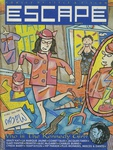 | Escape 8 Paul Gravett |
Type: Anthology Comic Year: 1986 Format: A4 Country: UK 🔗 101048 |
 |
Escape 9 Paul Gravett |
Type: Anthology Comic Year: 1986 Format: A4 Country: UK 🔗 100727 |
 |
Escape 10 Paul Gravett |
Type: Anthology Comic Year: 1987 Format: A4 Country: UK 🔗 100726 |
 |
Escape 11 Paul Gravett |
Type: Zine Year: 1987 Format: A4 Country: UK 🔗 100799 |
| 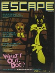 | Escape 12 Paul Gravett |
Type: Anthology Comic Year: 1987 Format: A4 Country: UK 🔗 100728 |
 |
Escape 17 Paul Gravett |
Type: Anthology Comic Year: 1989 Format: A4 Country: UK 🔗 100729 |
 |
Fun Comics 1 Paul M Davies |
Type: Comic Year: 1995 Format: A5 Country: UK 🔗 100079 |
 |
Fun Comics 2 Paul M Davies |
Type: Comic Year: 1995 Format: A5 Country: UK 🔗 100073 |
 |
Fun Comics 3 Paul M Davies |
Type: Comic Year: 1996 Format: A5 Country: UK 🔗 100391 |
 |
Fun Comics 5 Paul M Davies |
Type: Comic Year: 1996 Format: A5 Country: UK 🔗 100083 |
 |
Dear Robert and Partner Paul Rainey |
Type: Comic Year: 2007 Format: A5 Country: UK 🔗 100195 |
| Mooncat's very own comic Paul Schroeder |
Type: Comic Year: 1993 Format: A5 Country: UK 🔗 100358 |
|
 |
Zum! 9 Paul Schroeder |
Type: Review Zine Year: 1995 Format: A4 Country: UK 🔗 100918 |
| Zum! 10 Paul Schroeder |
Type: Review Zine Year: 1997 Format: A4 Country: UK 🔗 100919 |
|
 |
Fume! Peet Clack |
Type: Comic Year: 2002 Format: A6 Country: UK 🔗 100157 |
 |
BrumCAB 97 Pete Ashton |
Type: Other Year: 1997 Format: A4 Country: UK 🔗 100884 |
 |
BugPowder Distribution Catalogue 7 Pete Ashton |
Type: Catalogue Year: 1998 Format: A4 Country: UK 🔗 100615 |
| 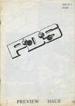 | PDS 0 Pete Ashton |
Type: Anthology Comic Year: 1990 Format: A4 Country: UK 🔗 100616 |
 |
PDS 2 Pete Ashton |
Type: Anthology Comic Year: 1991 Format: A4 Country: UK 🔗 100669 |
 |
PDS 3 Pete Ashton |
Type: Anthology Comic Year: 1991 Format: A4 Country: UK 🔗 100670 |
 |
PDS 4 Pete Ashton |
Type: Anthology Comic Year: 1991 Format: A4 Country: UK 🔗 100617 |
 |
Strands 1 Pete Ashton |
Type: Review Zine Year: 1997 Format: A4 Country: UK 🔗 100469 |
 |
Strands 2 Pete Ashton |
Type: Review Zine Year: 1997 Format: A4 Country: UK 🔗 100758 |
 |
Vicious 1 Pete Ashton |
Type: Zine Year: 1995 Format: A5 Country: UK 🔗 100470 |
 |
Vicious 2 Pete Ashton |
Type: Zine Year: 1995 Format: A4 Country: UK 🔗 100474 |
 |
Vicious 3 Pete Ashton |
Type: Zine Year: 1995 Format: A4 Country: UK 🔗 100468 |
 |
Vicious 4 Pete Ashton |
Type: Zine Year: 1996 Format: A4 Country: UK 🔗 100784 |
 |
Vicious 5 Pete Ashton |
Type: Zine Year: 1996 Format: A4 Country: UK 🔗 100476 |
 |
Vicious 6 Pete Ashton |
Type: Zine Year: 1997 Format: A4 Country: UK 🔗 100473 |
 |
What's New Pussycat / TRS Aug 1996 Pete Ashton |
Type: Review Zine Year: 1996 Format: A4 Country: UK 🔗 100842 |
 |
The Infernal Gods of Electric Disaster 2 Pete Dorée |
Type: Comic Year: Format: A4 Country: UK 🔗 100613 |
| Big Bang Comics 2 Pete Loveday |
Type: Comic Year: Format: A4 Country: UK 🔗 100910 |
|
 |
Big Trip Travel Agency 1 Pete Loveday |
Type: Comic Year: Format: A4 Country: UK 🔗 101002 |
| Big Trip Travel Agency 2 Pete Loveday |
Type: Comic Year: 1994 Format: A4 Country: UK 🔗 100897 |
|
 |
The Storming of The City Pete Loveday |
Type: Comic Year: 1999 Format: A4 Country: UK 🔗 100603 |
| Ground Level 2 Pete Pavement |
Type: Zine Year: Format: Other Country: UK 🔗 101046 |
|
 |
Round Midnight 2 Peter Bangs |
Type: Comic Year: 1996 Format: A5 Country: UK 🔗 100209 |
 |
Equinox 1 Peter M Jaques |
Type: Anthology Comic Year: 1995 Format: A4 Country: UK 🔗 100783 |
 |
From The Tomb 4 Peter Normanton |
Type: Zine Year: 2001 Format: A4 Country: UK 🔗 100769 |
 |
Pavement 1 Peter Pavement |
Type: Comic Year: 1992 Format: A5 Country: UK 🔗 100259 |
 |
Pavement 2+3 Peter Pavement |
Type: Anthology Comic Year: 1992 Format: A5 Country: UK 🔗 100218 |
 |
The Information 4 Peter Poole |
Type: Zine Year: 1999 Format: A5 Country: UK 🔗 100045 |
 |
Absent Friends Phil Elliott |
Type: Comic Year: 2002 Format: A5 Country: UK 🔗 100860 |
 |
Doc Chaos 2 Phil Elliott |
Type: Comic Year: 1985 Format: A4 Country: UK 🔗 100978 |
 |
Doc Chaos Phil Elliott |
Type: Comic Year: 1985 Format: A4 Country: UK 🔗 100730 |
 |
Jonni Star Phil Elliott |
Type: Comic Year: 1998 Format: A5 Country: UK 🔗 100031 |
 |
The Best Times of Your Life Philip Laskey |
Type: Comic Year: 1988 Format: A4 Country: UK 🔗 100707 |
| Fresh Ups 3 Pinky |
Type: Comic Year: 2001 Format: Other Country: UK 🔗 100772 |
|
| Velocity 5 Please Brothers |
Type: Comic Year: 1991 Format: A4 Country: UK 🔗 100922 |
|
 |
Velocity 6 Please Brothers |
Type: Comic Year: Format: A4 Country: UK 🔗 100896 |
 |
Art Students Stole My Vibrator Rachel House |
Type: Comic Year: 2000 Format: A5 Country: UK 🔗 100106 |
 |
Bumper Summer Fun Rachel House |
Type: Comic Year: 2003 Format: A5 Country: UK 🔗 100233 |
| Night Dancing Ralph Horsley |
Type: Comic Year: Format: A4 Country: UK 🔗 100970 |
|
 |
Captain Dolphin 5 Ralph Kidson |
Type: Comic Year: Format: A5 Country: UK 🔗 100067 |
 |
Hardcore Hamsters Ralph Kidson |
Type: Comic Year: Format: A5 Country: UK 🔗 100490 |
 |
Two To Beam Up 2 Ralph Kidson |
Type: Comic Year: 2001 Format: A5 Country: UK 🔗 100305 |
 |
Turn 1 Reuben Willmott |
Type: Anthology Comic Year: 1994 Format: A4 Country: UK 🔗 100512 |
 |
Turn 2 Reuben Willmott |
Type: Anthology Comic Year: 1995 Format: A4 Country: UK 🔗 100511 |
 |
Turn 3 Reuben Willmott |
Type: Anthology Comic Year: 1995 Format: A4 Country: UK 🔗 100894 |
 |
Turn 4 Reuben Willmott |
Type: Anthology Comic Year: 1995 Format: A4 Country: UK 🔗 100483 |
 |
Turn 5 Reuben Willmott |
Type: Anthology Comic Year: 1996 Format: A4 Country: UK 🔗 100481 |
 |
Sub Rosa 1 Richard Argent |
Type: Comic Year: 1993 Format: A5 Country: UK 🔗 100432 |
 |
Kartoon Cuts Richard Cowdry |
Type: Comic Year: 2004 Format: A4 Country: UK 🔗 100500 |
 |
The Bedsit Journal 1 Richard Cowdry |
Type: Anthology Comic Year: 2004 Format: A4 Country: UK 🔗 100493 |
| The Bedsit Journal 2 Richard Cowdry |
Type: Anthology Comic Year: 2007 Format: A4 Country: UK 🔗 100701 |
|
 |
Cheronna 1 Richard J Smith |
Type: Comic Year: 1998 Format: A4 Country: UK 🔗 100624 |
| Big Space Stories 1 Richard Starzecki |
Type: Comic Year: 1999 Format: A5 Country: UK 🔗 100850 |
|
 |
Skin Richard Woods & Bill Naylor |
Type: Anthology Comic Year: 1995 Format: A4 Country: UK 🔗 101017 |
 |
Automatic 6 Richard Z Starbuck |
Type: Anthology Comic Year: 1996 Format: A5 Country: UK 🔗 100151 |
 |
Chain Mesh 4 Richard Z Starbuck |
Type: Anthology Comic Year: 1992 Format: A5 Country: UK 🔗 100431 |
 |
Tiddles the Wonder Cat's Super Silly Fun Book Rick Olsen |
Type: Comic Year: 1997 Format: A5 Country: UK 🔗 100005 |
 |
Lifewish Bay Ricky Douglas |
Type: Comic Year: Format: A5 Country: UK 🔗 100163 |
 |
American Ant 1 Rik Hoskin |
Type: Comic Year: 1993 Format: A5 Country: UK 🔗 100034 |
 |
Broken Jeffrey Rik Hoskin |
Type: Comic Year: 1996 Format: A5 Country: UK 🔗 100145 |
| Defective Comics 113 Rik Hoskin |
Type: Comic Year: 1997 Format: A4 Country: UK 🔗 100681 |
|
 |
Defective Comics 114 Rik Hoskin |
Type: Comic Year: 1997 Format: A4 Country: UK 🔗 100709 |
| 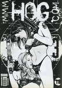 | Hog 3 Rik Rawling |
Type: Comic Year: Format: A4 Country: UK 🔗 101022 |
 |
Shrapnel Kiss Rik Rawling |
Type: Comic Year: 1995 Format: A5 Country: UK 🔗 100428 |
 |
Near Myths 1 Rob King |
Type: Anthology Comic Year: 1978 Format: A4 Country: UK 🔗 100885 |
 |
Near Myths 2 Rob King |
Type: Anthology Comic Year: 1978 Format: A4 Country: UK 🔗 100949 |
 |
Near Myths 3 Rob King |
Type: Anthology Comic Year: 1978 Format: A4 Country: UK 🔗 100973 |
 |
Near Myths 4 Rob King |
Type: Anthology Comic Year: 1979 Format: A4 Country: UK 🔗 100974 |
 |
Pride of an Angel 1 Robert Martin |
Type: Comic Year: 2003 Format: A5 Country: UK 🔗 100178 |
| Pride of an Angel 1 Robert Martin |
Type: Comic Year: 2001 Format: A5 Country: UK 🔗 100248 |
|
 |
Pride of an Angel 2 Robert Martin |
Type: Comic Year: 2001 Format: A5 Country: UK 🔗 100203 |
 |
Pride of an Angel One Shot Robert Martin |
Type: Comic Year: 2002 Format: A5 Country: UK 🔗 100299 |
| Stanislas in Off The Hook Roger Mason |
Type: Comic Year: 2004 Format: A4 Country: UK 🔗 101025 |
|
 |
The Mice in RAID Roger Mason |
Type: Comic Year: 2003 Format: A5 Country: UK 🔗 100228 |
 |
A Jock Gallery Rol Hirst |
Type: Comic Year: 1994 Format: A5 Country: UK 🔗 100271 |
 |
Escape Committee 1 Rol Hirst |
Type: Comic Year: 1999 Format: A5 Country: UK 🔗 100217 |
 |
Escape Committee 2 Rol Hirst |
Type: Comic Year: Format: A5 Country: UK 🔗 100453 |
 |
The Jock 1 Rol Hirst |
Type: Comic Year: 1993 Format: A5 Country: UK 🔗 100267 |
| The Jock 2 Rol Hirst |
Type: Comic Year: 1993 Format: A5 Country: UK 🔗 100398 |
|
 |
The Jock 3 Rol Hirst |
Type: Comic Year: 1993 Format: A5 Country: UK 🔗 100424 |
| The Jock 4 Rol Hirst |
Type: Comic Year: 1993 Format: A5 Country: UK 🔗 100386 |
|
 |
The Jock 5 Rol Hirst |
Type: Comic Year: 1993 Format: A5 Country: UK 🔗 100043 |
 |
The Jock 6 Rol Hirst |
Type: Comic Year: 1993 Format: A5 Country: UK 🔗 100294 |
 |
The Jock 8 Rol Hirst |
Type: Comic Year: 1993 Format: A5 Country: UK 🔗 100136 |
 |
The Jock 9 Rol Hirst |
Type: Comic Year: 1993 Format: A5 Country: UK 🔗 100135 |
 |
The Jock 10 Rol Hirst |
Type: Comic Year: 1994 Format: A5 Country: UK 🔗 100134 |
 |
The Jock 11 Rol Hirst |
Type: Comic Year: 1994 Format: A5 Country: UK 🔗 100133 |
 |
The Jock 12 Rol Hirst |
Type: Comic Year: 1994 Format: A5 Country: UK 🔗 100138 |
 |
The Jock 13 Rol Hirst |
Type: Comic Year: 1994 Format: A5 Country: UK 🔗 100382 |
 |
The Jock 14 Rol Hirst |
Type: Comic Year: 1994 Format: A5 Country: UK 🔗 100137 |
 |
The Jock 15 Rol Hirst |
Type: Comic Year: 1994 Format: A5 Country: UK 🔗 100139 |
 |
The Jock 16 Rol Hirst |
Type: Comic Year: 1994 Format: A5 Country: UK 🔗 100141 |
 |
The Jock 18 Rol Hirst |
Type: Comic Year: 1995 Format: A5 Country: UK 🔗 100224 |
 |
The Jock 19 Rol Hirst |
Type: Comic Year: 1995 Format: A5 Country: UK 🔗 100396 |
 |
The Jock 20 Rol Hirst |
Type: Comic Year: 1995 Format: A5 Country: UK 🔗 100222 |
 |
The Jock 21 Rol Hirst |
Type: Comic Year: 1995 Format: A5 Country: UK 🔗 100288 |
 |
The Jock 22 Rol Hirst |
Type: Comic Year: 1995 Format: A5 Country: UK 🔗 100387 |
 |
The Jock 23 Rol Hirst |
Type: Comic Year: 1995 Format: A5 Country: UK 🔗 100359 |
 |
The Jock 24 Rol Hirst |
Type: Comic Year: 1996 Format: A5 Country: UK 🔗 100360 |
 |
Garbles 6 Ros Garbles |
Type: Comic Year: 1993 Format: A5 Country: UK 🔗 100377 |
 |
Garbles 7 Ros Garbles |
Type: Comic Year: 1993 Format: A5 Country: UK 🔗 100091 |
 |
Garbles 9 Ros Garbles |
Type: Comic Year: 1994 Format: A5 Country: UK 🔗 100180 |
 |
Garbles 10 Ros Garbles |
Type: Comic Year: 1995 Format: A5 Country: UK 🔗 100181 |
 |
Garbles 11 Ros Garbles |
Type: Comic Year: 1997 Format: A5 Country: UK 🔗 100225 |
 |
Rough Cut Presents Trailers 1 Rough Cut Comics |
Type: Comic Year: 2001 Format: A5 Country: UK 🔗 100089 |
 |
My Daily Review 1 Sally Anne Hickman |
Type: Comic Year: 2001 Format: A5 Country: UK 🔗 100001 |
 |
Issue 1 Sam Learmouth |
Type: Comic Year: 1993 Format: A4 Country: UK 🔗 100542 |
| Phobias Sammy Wammy |
Type: Zine Year: 2000 Format: A5 Country: UK 🔗 100052 |
|
 |
Soft 1 Sarah Gunn |
Type: Comic Year: Format: A5 Country: UK 🔗 100226 |
 |
Soft 2 Sarah Gunn |
Type: Comic Year: Format: A5 Country: UK 🔗 100172 |
 |
Lord Horror 1 Savoy Books |
Type: Comic Year: 1989 Format: A4 Country: UK 🔗 100638 |
 |
Lord Horror 2 Savoy Books |
Type: Comic Year: 1989 Format: A4 Country: UK 🔗 100636 |
 |
Lord Horror 3 Savoy Books |
Type: Comic Year: 1990 Format: A4 Country: UK 🔗 100635 |
 |
Lord Horror 4 Savoy Books |
Type: Comic Year: 1990 Format: A4 Country: UK 🔗 100904 |
 |
Lord Horror 5 Savoy Books |
Type: Comic Year: 1990 Format: A4 Country: UK 🔗 100977 |
 |
Lord Horror 6 Savoy Books |
Type: Comic Year: 1990 Format: A4 Country: UK 🔗 100608 |
 |
Lord Horror 7 Savoy Books |
Type: Comic Year: 1990 Format: A4 Country: UK 🔗 100976 |
 |
Lord Horror 8 Savoy Books |
Type: Comic Year: 1994 Format: A4 Country: UK 🔗 100637 |
 |
Lord Horror 9 Savoy Books |
Type: Comic Year: 1994 Format: A4 Country: UK 🔗 101000 |
 |
Lord Horror 10 Savoy Books |
Type: Comic Year: 1994 Format: A4 Country: UK 🔗 100903 |
| Lord Horror 11 Savoy Books |
Type: Comic Year: 1995 Format: A4 Country: UK 🔗 100607 |
|
 |
Lord Horror 12 Savoy Books |
Type: Comic Year: 1996 Format: A4 Country: UK 🔗 100789 |
 |
Meng & Ecker 1 Savoy Books |
Type: Comic Year: 1989 Format: A4 Country: UK 🔗 100945 |
 |
Meng & Ecker 2 Savoy Books |
Type: Comic Year: 1989 Format: A4 Country: UK 🔗 101001 |
 |
Meng & Ecker 3 Savoy Books |
Type: Comic Year: 1990 Format: A4 Country: UK 🔗 100948 |
 |
Meng & Ecker 4 Savoy Books |
Type: Comic Year: 1990 Format: A4 Country: UK 🔗 100902 |
 |
Meng & Ecker 5 Savoy Books |
Type: Comic Year: 1992 Format: A4 Country: UK 🔗 100947 |
 |
Meng & Ecker 6 Savoy Books |
Type: Comic Year: 1993 Format: A4 Country: UK 🔗 100946 |
| Meng & Ecker 7 Savoy Books |
Type: Comic Year: 1993 Format: A4 Country: UK 🔗 100905 |
|
| Meng & Ecker 8 Savoy Books |
Type: Comic Year: 1994 Format: A4 Country: UK 🔗 100906 |
|
| Meng & Ecker 9 Savoy Books |
Type: Comic Year: 1995 Format: A4 Country: UK 🔗 100901 |
|
 |
Monoshock Savoy Books |
Type: Comic Year: Format: A4 Country: UK 🔗 100786 |
 |
AKTSN 6 SchNEWS |
Type: Zine Year: 1998 Format: A4 Country: UK 🔗 100026 |
 |
SchNEWS 158 SchNEWS |
Type: Zine Year: 1998 Format: A4 Country: UK 🔗 100022 |
| SchNEWS 159 SchNEWS |
Type: Zine Year: 1998 Format: A4 Country: UK 🔗 100023 |
|
 |
SchNEWS 160 SchNEWS |
Type: Zine Year: 1998 Format: A4 Country: UK 🔗 100024 |
 |
SchNEWS 161 SchNEWS |
Type: Zine Year: 1998 Format: A5 Country: UK 🔗 100021 |
 |
SchNEWS 162 SchNEWS |
Type: Zine Year: 1998 Format: A5 Country: UK 🔗 100025 |
| Ed Sean Azzopardi |
Type: Comic Year: 2005 Format: A5 Country: UK 🔗 100080 |
|
 |
Twelve Hour Shift Sean Azzopardi |
Type: Comic Year: 2005 Format: A5 Country: UK 🔗 100149 |
 |
Paper Tiger Comix 1 Sean Duffield |
Type: Anthology Comic Year: 2004 Format: A5 Country: UK 🔗 100099 |
 |
Paper Tiger Comix 2 Sean Duffield |
Type: Anthology Comic Year: 2005 Format: A5 Country: UK 🔗 100326 |
 |
Paper Tiger Comix 4 Sean Duffield |
Type: Anthology Comic Year: 2007 Format: A5 Country: UK 🔗 100873 |
 |
The Girly Comic 1 Selina Locke |
Type: Anthology Comic Year: 2002 Format: A5 Country: UK 🔗 100343 |
 |
Imagineers 4 Shane Chesby |
Type: Zine Year: 2001 Format: A5 Country: UK 🔗 100160 |
 |
The Comics Reviewer 2 Simon Baker |
Type: Review Zine Year: 1996 Format: A5 Country: UK 🔗 100376 |
 |
Arnie 6 Simon Gane |
Type: Zine Year: Format: A4 Country: UK 🔗 100611 |
 |
Arnie 7 Simon Gane |
Type: Zine Year: 1994 Format: A4 Country: UK 🔗 100612 |
| 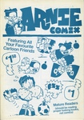 | Arnie Comix 1 Simon Gane |
Type: Comic Year: 1995 Format: A4 Country: UK 🔗 100890 |
 |
Strimp Simon Mackie |
Type: Comic Year: 1996 Format: A5 Country: UK 🔗 100242 |
| Waikiki Luau Simon Mackie |
Type: Comic Year: 1996 Format: A4 Country: UK 🔗 100900 |
|
 |
Flying Monkey 3 Simon Perrins |
Type: Comic Year: 1998 Format: A5 Country: UK 🔗 100070 |
 |
Hope for the Future 1 Simon Perrins |
Type: Comic Year: 2000 Format: A5 Country: UK 🔗 100309 |
 |
Hope for the Future 3 Simon Perrins |
Type: Comic Year: 2001 Format: A5 Country: UK 🔗 100154 |
 |
Anarchy in the UK... the Comic! Slab-o-Concrete |
Type: Anthology Comic Year: 1994 Format: A5 Country: UK 🔗 100211 |
 |
Slab International July 1997 Slab-o-Concrete |
Type: Catalogue Year: 1997 Format: A6 Country: UK 🔗 100857 |
 |
Smoke - A London Peculiar 4 Smoke |
Type: Zine Year: 2003 Format: A5 Country: UK 🔗 100100 |
 |
Smoke - A London Peculiar 6 Smoke |
Type: Zine Year: Format: A5 Country: UK 🔗 100148 |
 |
Zimmerframepileup 12 Stephen Jessener |
Type: Zine Year: Format: A4 Country: UK 🔗 100674 |
| EG Steve Blincoe |
Type: Comic Year: Format: A4 Country: UK 🔗 100879 |
|
 |
Fat Knite 3 Steve Blincoe |
Type: Zine Year: 1988 Format: A5 Country: UK 🔗 100044 |
 |
Fat Knite 4 Steve Blincoe |
Type: Zine Year: Format: A5 Country: UK 🔗 100048 |
 |
Fat Knite 5 Steve Blincoe |
Type: Zine Year: Format: A5 Country: UK 🔗 100047 |
 |
Fat Knite 6 Steve Blincoe |
Type: Zine Year: Format: A5 Country: UK 🔗 100046 |
| LCC Presents: The Joy of S*x Steve Marchant |
Type: Anthology Comic Year: 1993 Format: A4 Country: UK 🔗 100662 |
|
 |
Hey! Mrs Martin Steve Martin |
Type: Comic Year: 2000 Format: A4 Country: UK 🔗 101021 |
 |
Terrible Sunrise 3 Steve Martin |
Type: Comic Year: 2003 Format: A4 Country: UK 🔗 100713 |
 |
Crisp! Steve Roper |
Type: Other Year: 1997 Format: A4 Country: UK 🔗 100927 |
 |
Gail & Delphi Steve Whitaker |
Type: Comic Year: Format: A4 Country: UK 🔗 100548 |
 |
Octobriana - Filling in the Blanks (preview) 1 Stuart Taylor |
Type: Comic Year: 1997 Format: A4 Country: UK 🔗 100655 |
 |
Sofa 1 Sussex Small Press Artists Militia |
Type: Anthology Comic Year: 1993 Format: A4 Country: UK 🔗 100697 |
 |
Sofa 2 Sussex Small Press Artists Militia |
Type: Anthology Comic Year: 1994 Format: A4 Country: UK 🔗 100698 |
 |
Sturgeon White Moss 1 Sylvia Farago |
Type: Anthology Comic Year: 2002 Format: A4 Country: UK 🔗 101030 |
 |
Sturgeon White Moss 2 Sylvia Farago |
Type: Anthology Comic Year: 2003 Format: A4 Country: UK 🔗 101031 |
| Sturgeon White Moss 3 Sylvia Farago |
Type: Anthology Comic Year: 2003 Format: A4 Country: UK 🔗 101032 |
|
 |
Terracotta Terracotta |
Type: Zine Year: 1996 Format: A5 Country: UK 🔗 100123 |
| Sleaze Castle 7.5 Terry Wiley |
Type: Comic Year: 1996 Format: A4 Country: UK 🔗 100722 |
|
 |
Surreal School Stories 1 Terry Wiley |
Type: Comic Year: 1995 Format: A4 Country: UK 🔗 100561 |
| Surreal School Stories 2 Terry Wiley |
Type: Comic Year: 1995 Format: A4 Country: UK 🔗 101019 |
|
 |
Surreal School Stories 3 Terry Wiley |
Type: Comic Year: 1996 Format: A4 Country: UK 🔗 101020 |
 |
Surreal School Stories 4 Terry Wiley |
Type: Comic Year: 1996 Format: A4 Country: UK 🔗 100598 |
 |
Surreal School Stories 5 Terry Wiley |
Type: Comic Year: 1997 Format: A4 Country: UK 🔗 100599 |
 |
Surreal School Stories 6 Terry Wiley |
Type: Comic Year: 1998 Format: A4 Country: UK 🔗 100600 |
| 1996: The Calendar Terry Wiley & Dave McKinnon |
Type: Other Year: 1996 Format: A4 Country: UK 🔗 100888 |
|
 |
The Desyre Foundation Newsletter 1 The Desyre Foundation |
Type: Zine Year: 1996 Format: A5 Country: UK 🔗 100092 |
 |
We Brought Our Friends The Doc |
Type: Zine Year: 1998 Format: A4 Country: UK 🔗 100551 |
 |
There Goes Tokyo... Presents 2 There Goes Tokyo |
Type: Anthology Comic Year: 2001 Format: A4 Country: UK 🔗 100677 |
 |
There Goes Tokyo... Spotlight On... 1 There Goes Tokyo |
Type: Anthology Comic Year: 2001 Format: A4 Country: UK 🔗 100537 |
 |
There Goes Tokyo... Spotlight On... 2 There Goes Tokyo |
Type: Anthology Comic Year: 2001 Format: A4 Country: UK 🔗 101016 |
 |
Delirium Tremens 5 Three Drunken Goths |
Type: Zine Year: 1999 Format: A5 Country: UK 🔗 100053 |
 |
Brin 2 Tim Brown |
Type: Comic Year: 1998 Format: A5 Country: UK 🔗 100131 |
 |
Mystic Jam 8 Tim Brown |
Type: Comic Year: 1996 Format: A5 Country: UK 🔗 100433 |
 |
Nightclub Nick 1 Tim Brown |
Type: Comic Year: 2000 Format: A5 Country: UK 🔗 100062 |
 |
Nightclub Nick 2 Tim Brown |
Type: Comic Year: 2000 Format: A5 Country: UK 🔗 100115 |
 |
Nightclub Nick 4 Tim Brown |
Type: Comic Year: 2000 Format: A5 Country: UK 🔗 100164 |
 |
Nightclub Nick 6 Tim Brown |
Type: Comic Year: 2000 Format: A5 Country: UK 🔗 100063 |
 |
Talamander 0 Tim Brown |
Type: Comic Year: 2000 Format: A4 Country: UK 🔗 100501 |
 |
Talamander 1 Tim Brown |
Type: Comic Year: 1999 Format: A4 Country: UK 🔗 100456 |
 |
Talamander 2 Tim Brown |
Type: Comic Year: 2000 Format: A4 Country: UK 🔗 100563 |
 |
Talamander 4 Tim Brown |
Type: Comic Year: 2000 Format: A4 Country: UK 🔗 100564 |
 |
Talamander 7 Tim Brown |
Type: Comic Year: 2001 Format: A4 Country: UK 🔗 100573 |
 |
Talamander 8 Tim Brown |
Type: Comic Year: 2001 Format: A4 Country: UK 🔗 100572 |
 |
The Mystic Stones 1 Tim Brown |
Type: Comic Year: 1996 Format: A5 Country: UK 🔗 100437 |
 |
The Mystic Stones 4 Tim Brown |
Type: Comic Year: 1996 Format: A5 Country: UK 🔗 100262 |
 |
The Mystic Stones 5 Tim Brown |
Type: Comic Year: 1996 Format: A5 Country: UK 🔗 100227 |
 |
The Mystic Stones 6 Tim Brown |
Type: Comic Year: 1996 Format: A5 Country: UK 🔗 100199 |
 |
The Mystic Stones 7 Tim Brown |
Type: Comic Year: 1996 Format: A5 Country: UK 🔗 100263 |
| Ugly Earth 2 TJ McG |
Type: Zine Year: 2001 Format: A4 Country: UK 🔗 100937 |
|
| Japanize 1 Toko |
Type: Comic Year: 1999 Format: A5 Country: UK 🔗 100871 |
|
 |
Japanize 2 Toko |
Type: Comic Year: 1999 Format: A5 Country: UK 🔗 100321 |
 |
Japanize 3 Toko |
Type: Comic Year: 1999 Format: A5 Country: UK 🔗 100268 |
 |
Japanize 10 Toko |
Type: Comic Year: 2001 Format: A5 Country: UK 🔗 100349 |
| Matthew (untitled?) Tom Magness |
Type: Comic Year: Format: A5 Country: UK 🔗 100869 |
|
 |
Radical Band 1 Tom Magness |
Type: Comic Year: 2001 Format: A5 Country: UK 🔗 100844 |
 |
Strange Adventures 18 Tony Lee |
Type: Zine Year: 1990 Format: A4 Country: UK 🔗 100515 |
 |
Strange Adventures 24 Tony Lee |
Type: Zine Year: 1991 Format: A4 Country: UK 🔗 100516 |
 |
Strange Adventures 27 Tony Lee |
Type: Zine Year: 1991 Format: A4 Country: UK 🔗 100517 |
 |
Strange Adventures 29 Tony Lee |
Type: Zine Year: 1991 Format: A4 Country: UK 🔗 100675 |
 |
Strange Adventures 31 Tony Lee |
Type: Zine Year: 1991 Format: A4 Country: UK 🔗 100498 |
 |
Strange Adventures 32 Tony Lee |
Type: Zine Year: 1991 Format: A4 Country: UK 🔗 100520 |
| Strange Adventures 33 Tony Lee |
Type: Zine Year: 1991 Format: A4 Country: UK 🔗 100521 |
|
 |
Strange Adventures 34 Tony Lee |
Type: Zine Year: 1991 Format: A4 Country: UK 🔗 100522 |
 |
Strange Adventures 35 Tony Lee |
Type: Zine Year: 1992 Format: A4 Country: UK 🔗 100523 |
 |
Strange Adventures 36 Tony Lee |
Type: Zine Year: 1992 Format: A4 Country: UK 🔗 100524 |
 |
Strange Adventures 37 Tony Lee |
Type: Zine Year: 1992 Format: A4 Country: UK 🔗 100525 |
 |
Strange Adventures 38 Tony Lee |
Type: Zine Year: 1992 Format: A4 Country: UK 🔗 100526 |
 |
Strange Adventures 39 Tony Lee |
Type: Zine Year: 1992 Format: A4 Country: UK 🔗 100527 |
 |
Strange Adventures 40 Tony Lee |
Type: Zine Year: 1992 Format: A4 Country: UK 🔗 100528 |
 |
Strange Adventures 41 Tony Lee |
Type: Zine Year: 1992 Format: A4 Country: UK 🔗 100509 |
 |
Strange Adventures 42 Tony Lee |
Type: Zine Year: 1992 Format: A4 Country: UK 🔗 100502 |
 |
Strange Adventures 43 Tony Lee |
Type: Zine Year: 1992 Format: A4 Country: UK 🔗 100503 |
 |
Strange Adventures 44 Tony Lee |
Type: Zine Year: 1993 Format: A4 Country: UK 🔗 100504 |
 |
Strange Adventures 45 Tony Lee |
Type: Zine Year: 1993 Format: A4 Country: UK 🔗 100505 |
 |
Strange Adventures 46 Tony Lee |
Type: Zine Year: 1993 Format: A4 Country: UK 🔗 100506 |
 |
Strange Adventures 47 Tony Lee |
Type: Zine Year: 1993 Format: A4 Country: UK 🔗 100507 |
 |
Strange Adventures 48 Tony Lee |
Type: Zine Year: 1993 Format: A4 Country: UK 🔗 100566 |
 |
Strange Adventures 49 Tony Lee |
Type: Zine Year: 1993 Format: A4 Country: UK 🔗 100567 |
 |
Strange Adventures Special 2 Tony Lee |
Type: Zine Year: 1993 Format: A4 Country: UK 🔗 100514 |
 |
Strange Adventures Special 3 Tony Lee |
Type: Zine Year: 1993 Format: A4 Country: UK 🔗 100518 |
 |
Strange Adventures Tony Lee |
Type: Zine Year: 1991 Format: A4 Country: UK 🔗 100494 |
 |
Angel Nebula 4 Tony McGee |
Type: Comic Year: 1999 Format: A5 Country: UK 🔗 100372 |
 |
Angel Nebula 9 Tony McGee |
Type: Comic Year: 2001 Format: A5 Country: UK 🔗 100103 |
 |
Dark Weather 2 Tony McGee |
Type: Comic Year: 1997 Format: A4 Country: UK 🔗 100997 |
| Dark Weather 3 Tony McGee |
Type: Comic Year: 1997 Format: A4 Country: UK 🔗 100996 |
|
 |
Dark Weather 4 Tony McGee |
Type: Comic Year: 1997 Format: A5 Country: UK 🔗 100223 |
 |
Dark Weather 5 Tony McGee |
Type: Comic Year: 1998 Format: A5 Country: UK 🔗 100078 |
| Dark Weather Special 1 Tony McGee |
Type: Comic Year: 1998 Format: A5 Country: UK 🔗 100446 |
|
 |
Dark Weather Special 2 Tony McGee |
Type: Comic Year: 1998 Format: A5 Country: UK 🔗 100447 |
 |
Frontiers 2 Tony McGee |
Type: Comic Year: 2002 Format: A5 Country: UK 🔗 100385 |
 |
Frontiers 6 Tony McGee |
Type: Comic Year: 2003 Format: A5 Country: UK 🔗 100445 |
 |
Frontiers 7 Tony McGee |
Type: Comic Year: 2004 Format: A5 Country: UK 🔗 100295 |
 |
Fun Bag Tony McGee |
Type: Comic Year: Format: A5 Country: UK 🔗 100197 |
 |
Gimp City 1/2 Tony McGee |
Type: Comic Year: Format: A5 Country: UK 🔗 100429 |
 |
True Stories 2 Tony McGee |
Type: Comic Year: 2005 Format: A5 Country: UK 🔗 100196 |
 |
Sharkpool 2 Tracy B |
Type: Zine Year: 1998 Format: A5 Country: UK 🔗 100329 |
 |
Uncut Uncut |
Type: Zine Year: 1990 Format: A4 Country: UK 🔗 100955 |
 |
Dead Fly Pie 1 Walrus Press |
Type: Anthology Comic Year: 1994 Format: A4 Country: UK 🔗 100570 |
| The Smell of Napalm 1 Wayne Clarke |
Type: Zine Year: Format: A5 Country: UK 🔗 100354 |
|
 |
The Smell of Napalm 2 Wayne Clarke |
Type: Zine Year: Format: A5 Country: UK 🔗 100336 |
 |
Whores of Mensa 1 Whores of Mensa |
Type: Anthology Comic Year: 2004 Format: A4 Country: UK 🔗 100908 |
| 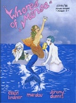 | Whores of Mensa 2 Whores of Mensa |
Type: Anthology Comic Year: 2005 Format: A4 Country: UK 🔗 100915 |
| 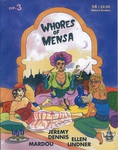 | Whores of Mensa 3 Whores of Mensa |
Type: Anthology Comic Year: 2007 Format: A4 Country: UK 🔗 101003 |
 |
Whores of Mensa 4 Whores of Mensa |
Type: Anthology Comic Year: 2009 Format: A4 Country: UK 🔗 100620 |
| 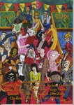 | Whores of Mensa 5 Whores of Mensa |
Type: Anthology Comic Year: Format: A4 Country: UK 🔗 100614 |
 |
Something Fast 1 Will Pickering |
Type: Comic Year: 1996 Format: A5 Country: UK 🔗 100174 |
 |
Something Fast 2 Will Pickering |
Type: Comic Year: 1996 Format: A5 Country: UK 🔗 100208 |
 |
Something Fast 3 Will Pickering |
Type: Comic Year: 1996 Format: A5 Country: UK 🔗 100173 |
 |
Heartbreak Hotel 1 Willyprods |
Type: Anthology Comic Year: 1997 Format: A4 Country: UK 🔗 100796 |
 |
Heartbreak Hotel 2 Willyprods |
Type: Anthology Comic Year: 1998 Format: A4 Country: UK 🔗 100795 |
| Class of '79 1 WR Logan |
Type: Zine Year: 1998 Format: A4 Country: UK 🔗 100457 |
|
| Wonky Fascination Yurt Barron |
Type: Comic Year: 2003 Format: A5 Country: UK 🔗 100324 |
ends.